第 59 章的滑模靠“把方向定死”换取抗扰，代价是控制量必须抖。本章换一条思路：不抖，也不解优化，而是沿着对象的积分链一级一级往回设计，让每一步都留下一个可以被下一级消掉的“欠账”。这条思路叫反步法（backstepping）。与它常常并称的是反馈线性化（feedback linearization）：先想办法把非线性对象“掰”成一个线性对象，再套用线性设计的全部结论。
两者都不靠“压”，而靠“算”：把非线性项显式地写出来，用控制量把它减掉。所以它们的性能上限比滑模高——标称工况下本章反步法的调节时间是 1.96 s，滑模在第 59 章同一类对象上是 2.53 s——但它们的命门也很清楚：减错了就补不回来。本章实测，a 偏 30% 时反步法的稳态误差是 0.21 m，而加了积分项之后是 1.17\times10^{-6} m。这中间差着五个数量级，正好把“模型精度要求”这句话量化了。
第一个难点是非匹配非线性。PID 与滑模都默认“控制量能直接影响你想控制的那个量”，即所谓匹配条件。但真实对象里，非线性往往出现在控制量进不去的地方。本章的对象就是一个例子：
\dot x_1=x_2+a\sin x_1,\qquad \dot x_2=-b x_2+c\tanh x_1+u \tag{60-1}
控制量 u 只出现在 \dot x_2 里，而 a\sin x_1 这一项出现在 \dot x_1 里。想把它减掉，只能通过 x_2 间接地减——这就逼出了“虚拟控制”的概念：把 x_2 当成一个可以下令的输入，先算出“如果 x_2 听话，它应该是多少”，再让真正的 u 去逼 x_2 追上这个值。
第二个难点是模型精度。式 (60-1) 里的 a、b、c 是标称值，实际对象总有偏差。滑模对匹配扰动有不变性，反步与反馈线性化没有：它们把非线性项减掉，减错了，残差就原封不动地留在闭环里，变成稳态误差。本章 §60.6 会把这句话做成一张表。
式 (60-1) 在标称参数 a=1.0、b=0.5、c=1.5 下，平衡点是原点。在原点线性化：
A=\begin{bmatrix}1 & 1\\ 1.5 & -0.5\end{bmatrix},\qquad \det(\lambda I-A)=\lambda^2-0.5\lambda-2 \tag{60-2}
两个特征根是
\lambda_1=2.0,\qquad \lambda_2=-1.5 \tag{60-3}
一正一负——开环是鞍点。这意味着不加控制时，绝大多数初始状态都会发散；同时它也意味着“把状态拉回原点”不是靠耗散，而是靠控制器主动对抗一个本就不稳定的模态。这一点很重要：它让“控制器算错了会怎样”这件事暴露得非常快，不会像渐近稳定对象那样被对象的自稳定性掩盖。
图 60-2 是开环相图。灰色箭头是 u=0 时的向量场，可以清楚看到一条“分界线”：分界线一侧的状态被推向 x_1\to+\infty，另一侧被推向 x_1\to-\infty。两条彩色曲线是闭环轨迹，从 x_1=-1.5 出发，都穿过这条危险的分界区，最后收敛到 (1,0)。
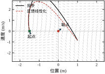
鞍点对象还有一个副作用：它让大初始偏差成为一项有意义的考核。表 60-1 列出了本章的全部仿真设置，其中初始状态在 §60.6 会被单独改成 (-1.5,0) 做一次“恢复实验”，用来对比三种方法在远离平衡点时的行为。
| 项目 | 取值 | 说明 |
|---|---|---|
| 对象参数 | a=1.0、b=0.5、c=1.5 | 标称值，失配实验在此基础上偏 ±30% |
| 初始状态 | x_1(0)=0、x_2(0)=0 | 恢复实验改用 x_1(0)=-1.5 |
| 参考输入 | 阶跃 1 m；斜坡 0.3 m/s | 斜坡用于考察跟踪滞后 |
| 采样周期 | T_s=0.01 s | 与第 59 章一致，便于横向比较 |
| 积分方法 | 每拍 RK4 细分 4 步 | 对象是非线性 ODE，不能用 ZOH |
| 执行器限幅 | \lvert u\rvert\le10 | 另设 2/3/5 三档考察饱和 |
反步法的推导可以压缩成三句话：
x_2\overset{!}{=}-k_1e_1-a\sin x_1+\dot r\triangleq\alpha_1 \tag{60-4}
\alpha_1 叫虚拟控制（virtual control）。它不是真正的输入，而是一个“如果 x_2 是输入，它该取多少”的中间指令。
承认 x_2 不会听话，把差距定义成第二级误差：e_2=x_2-\alpha_1。于是 \dot e_1=-k_1e_1+e_2，第一级误差的导数里多出一个“欠账” e_2。
让第二级把这个欠账还掉。对 e_2 求导，u 就在里面，直接令 \dot e_2=-k_2e_2-e_1，解出 u 即可。
三步做完，闭环误差方程就是
\dot e_1=-k_1e_1+e_2,\qquad \dot e_2=-e_1-k_2e_2 \tag{60-5}
这是一个线性系统，特征多项式 \lambda^2+(k_1+k_2)\lambda+(1+k_1k_2)。只要 k_1,k_2>0，两个根都在左半平面，误差指数收敛到零。反步法的全部魔力就在式 (60-5)：它把非线性对象变成了一个线性误差系统，而且不要求非线性项可逆、不要求它小。
反馈线性化的思路更直接：
\ddot y=-bx_2+c\tanh x_1+u+a\cos x_1\,(x_2+a\sin x_1) \tag{60-6}
u 出现了，且系数为 1，相对阶为 2。
u=v+bx_2-c\tanh x_1-a\cos x_1(x_2+a\sin x_1) \tag{60-7}
反步与反馈线性化在这里其实是同一件事的两种写法：式 (60-7) 里的 -c\tanh x_1-a\cos x_1(x_2+a\sin x_1) 是“抵消项”，式 (60-4) 里的 -a\sin x_1 也是“抵消项”；区别在于反步只抵消到第一级、把剩下的交给第二级的 k_2 去消化，反馈线性化则一次性把二阶导数全部摊平。这个差别决定了它们对模型误差的敏感度不同：反步的抵消项只出现在第一级，误差被第二级的高增益“盖住”一部分；反馈线性化的抵消项直接进 u，误差没有任何遮挡。
本章的 PID 基线是网格寻优得到的 (k_p,k_i,k_d)=(40,4,10)——在“t_s<8 s 且超调 <15\%”的约束下 IAE 最小的一组。它的标称表现是：调节时间 4.33 s、超调 3.80%、IAE 0.6731、稳态误差 0.0168 m。反步法是 1.96 s、0.01%、0.6983、1.79\times10^{-13} m。
两个数字值得注意：
但 PID 也有赢的地方：斜坡跟踪的滞后是 0.0012 m，比不带前馈的反步法（0.2112 m）好两个数量级。原因很简单，PID 的积分器在持续爬坡，天然记住了斜坡；反步法没有积分，只能靠 r_d 前馈（§60.6 会看到，加上前馈后滞后降到 0.0826 m，仍不如 PID）。这就是“结构换性能”的代价：反步法的性能是被设计出来的，没设计到的通道它就是零分。
本章所有表格用同一套指标，定义与第 58、59 章一致：
另外两个只在本章出现的量：稳态误差 |e_{ss}| 取末 1 s 的平均偏差，尾段纹波 \mathrm{ripple}_y 取末 1 s 内位置的峰峰值。前者看“算得准不准”，后者看“抖不抖”。
§60.2 推导反步的递推公式与反馈线性化的坐标变换；§60.3 给出可照着做的设计步骤与结构图；§60.4 讲连续实现，重点是微分爆炸；§60.5 讲离散实现与采样周期的关系；§60.6 用六组实验对照 PID、反馈线性化、积分反步；§60.7 讲 k_1、k_2、\tau、k_i 四个参数的物理意义；§60.8 给出整定顺序与五轮调试记录；§60.9 介绍动态面、积分反步、指令滤波与混合结构；§60.10 讲工程落地（模型标定、微分获取、饱和处理）；§60.11 给出选型边界；§60.12 给出可复现代码。
如果只记一句话：反步法把“控制一个高阶非线性对象”拆成“连续控制一串一阶子系统”，每一步都只还上一级留下的欠账；它算得越准，性能越好，也算错得越狠，性能越差。
反步法不是万能的，它要求对象能写成一条“链”：第 i 个状态方程的右端，只允许出现前 i 个状态，以及第 i+1 个状态的一次项。这叫严格反馈形式（strict-feedback form）：
\begin{aligned} \dot x_1&=x_2+\varphi_1(x_1)\\ \dot x_2&=x_3+\varphi_2(x_1,x_2)\\ &\ \ \vdots\\ \dot x_n&=\varphi_n(x_1,\dots,x_n)+b\,u \end{aligned} \tag{60-8}
其中 \varphi_i 是已知的光滑非线性函数，b\ne0 是输入增益。注意三点：控制量只出现在最后一式；每一式的“下一级状态”系数为 1（若不为 1，先做归一化）；非线性项 \varphi_i 不许含 x_{i+1} 及其后的状态。
本章对象式 (60-1) 正好是这个形式，n=2、\varphi_1=a\sin x_1、\varphi_2=-bx_2+c\tanh x_1、b=1。写不成这个形式的对象，标准反步法不能直接用：
严格反馈形式看起来限制很强，但工程上大量机电对象天生就是这个形状：电流环→速度环→位置环的级联、无人机的位置→速度→姿态、化工里的串联反应釜，都是“一级推一级”。反步法本质上是把级联结构的物理直觉变成了系统化的设计公式。
设参考信号 r 足够光滑。定义误差
e_1=x_1-r,\qquad e_i=x_i-\alpha_{i-1}\quad(i=2,\dots,n) \tag{60-9}
虚拟控制按同一套模式递推：
\alpha_1=-k_1e_1-\varphi_1+\dot r \tag{60-10}
\alpha_i=-k_ie_i-e_{i-1}-\varphi_i+\dot\alpha_{i-1},\qquad i=2,\dots,n-1 \tag{60-11}
u=\frac{1}{b}\left(-k_ne_n-e_{n-1}-\varphi_n+\dot\alpha_{n-1}\right) \tag{60-12}
三个 k_i>0 是设计参数。式 (60-10)–(60-12) 里每一项都有明确来处，表 60-2 把它们的职责分开列出：
| 项 | 作用 | 缺了会怎样 |
|---|---|---|
| -k_ie_i | 本级误差的比例反馈 | 本级误差不衰减，闭环极点跑向右半平面 |
| -e_{i-1} | 偿还上一级留下的欠账 | 上一级误差只能靠本级“顺带”收敛，速度慢一个量级 |
| -\varphi_i | 抵消本级非线性 | 非线性项变成未建模扰动，稳态误差按 §60.2.8 的公式出现 |
| +\dot\alpha_{i-1} | 补偿虚拟控制的变化率 | 相当于给本级加了一个随动的偏置，e_i 恒有稳态偏差 |
表 60-2 是读文献时最该盯住的地方：很多论文的“改进反步”其实就是往这四项里加东西（加积分项、加扰动观测器、把 \dot\alpha 换成滤波值）。
把式 (60-8) 取 n=2 展开，一步步做：
第一级：\dot e_1=\dot x_1-\dot r=x_2+a\sin x_1-\dot r。若希望 \dot e_1=-k_1e_1，则要求
x_2=-k_1e_1-a\sin x_1+\dot r\triangleq\alpha_1 \tag{60-13}
第二级：e_2=x_2-\alpha_1，于是
\dot e_1=-k_1e_1+e_2 \tag{60-14}
\dot e_2=\dot x_2-\dot\alpha_1=-bx_2+c\tanh x_1+u-\dot\alpha_1。令 \dot e_2=-k_2e_2-e_1，解出
u=-k_2e_2-e_1+bx_2-c\tanh x_1+\dot\alpha_1 \tag{60-15}
式 (60-15) 与式 (60-12) 完全一致（b=1、\varphi_2=-bx_2+c\tanh x_1）。\dot\alpha_1 由式 (60-13) 对时间求导得到：
\dot\alpha_1=-(k_1+a\cos x_1)(x_2+a\sin x_1)+\ddot r \tag{60-16}
式 (60-16) 是整章的关键公式，因为它同时是反步法的力量与反步法的麻烦：力量在于它把 \alpha_1 的变化率精确算出来了，第二级可以完全跟上；麻烦在于它需要 \dot x_1 的解析式，也就是需要对象模型逐项正确，还需要 x_2 的实时值。一旦 x_2 是从位置差分出来的，噪声就被 -(k_1+a\cos x_1) 这个因子放大后直接灌进 u。§60.4 会看到，这正是“微分爆炸”的来源，也是动态面（DSC）要解决的问题。
取
V=\tfrac12(e_1^2+e_2^2) \tag{60-17}
沿闭环求导：
\dot V=e_1\dot e_1+e_2\dot e_2 =e_1(-k_1e_1+e_2)+e_2(-e_1-k_2e_2) =-k_1e_1^2-k_2e_2^2 \tag{60-18}
两个交叉项 e_1e_2 精确抵消——这不是巧合，而是式 (60-11) 中 -e_{i-1} 项的唯一目的。由此得
V(t)\le V(0)\,e^{-2\min(k_1,k_2)\,t} \tag{60-19}
即误差范数至少按 \min(k_1,k_2) 的速率指数衰减。这把“稳定性”变成了一个可以直接算的数：本章 k_1=2、k_2=3，理论上误差的时间常数不快于 1/2=0.5 s，从 1 m 衰减到 2% 需要 -\ln(0.02)/2\approx1.96 s——实测调节时间正好是 1.96 s。
式 (60-19) 也给了一个反直觉的结论：闭环速度由较小的那个增益决定，而不是较大的那个。§60.6 的扫描数据会印证这一点：k_1 从 2 加到 8，调节时间只从 1.96 s 降到 1.42 s；而 IAE 从 0.6983 降到 0.4629，改善明显。原因是 k_1 大时虽然速度受 k_2=3 限制，但第一级的“欠账”更小，第二级不用花力气去追，全程误差积分自然下降。
反馈线性化的第一步是判断“要对输出求几次导，u 才会出现”。形式化的说法是相对阶（relative degree）：对仿射非线性对象
\dot{\boldsymbol x}=\boldsymbol f(\boldsymbol x)+\boldsymbol g(\boldsymbol x)u,\qquad y=h(\boldsymbol x) \tag{60-20}
若 L_gL_f^{i-1}h(\boldsymbol x)=0（i=1,\dots,\rho-1）而 L_gL_f^{\rho-1}h(\boldsymbol x)\ne0，则相对阶为 \rho。其中 L_fh=\partial h/\partial\boldsymbol x\cdot\boldsymbol f 是 Lie 导数。
对本章对象：h=x_1，L_gh=0（u 不在 \dot x_1 里）；L_fh=x_2+a\sin x_1；L_gL_fh=\partial(L_fh)/\partial x_2\cdot1=1\ne0。所以 \rho=2=n，属于“相对阶等于阶数”的情形——这是最理想的一类，可以做精确线性化，不会剩下内动态。
若 \rho<n，线性化之后还剩 n-\rho 维内动态（internal dynamics），其稳定性必须单独验证；内动态不稳定的对象叫“非最小相位”，反馈线性化会把它藏起来，然后在外表现为“输出跟得很好、内部已经发散”。这类对象在工程上并不罕见（倒立摆的台车位置输出、锅炉的汽包水位），是反馈线性化最容易翻车的地方。
取新坐标 z_1=y=x_1、z_2=\dot y=x_2+a\sin x_1，则
\dot z_1=z_2,\qquad \dot z_2=\alpha(\boldsymbol x)+\beta(\boldsymbol x)u \tag{60-21}
其中 \beta=1、\alpha=-bx_2+c\tanh x_1+a\cos x_1(x_2+a\sin x_1)。令
u=\frac{v-\alpha(\boldsymbol x)}{\beta(\boldsymbol x)} =v+bx_2-c\tanh x_1-a\cos x_1(x_2+a\sin x_1) \tag{60-22}
就得到 \ddot z_1=v，一个双积分器。再令 v=\ddot r-k_pe-k_d(\dot y-\dot r)，e=z_1-r，得
\ddot e+k_d\dot e+k_pe=0 \tag{60-23}
特征多项式 s^2+k_ds+k_p，本章 k_p=k_d=4，两个根都是 -2（临界阻尼）。这就是为什么反馈线性化的阶跃响应一点超调都没有：不是整定得好，而是极点被放在实轴上了。
式 (60-22) 与反步的式 (60-15) 形式上差别很大，但把它们并排放：
\begin{aligned} u_{\rm BST}&=-k_2e_2-e_1+bx_2-c\tanh x_1+\dot\alpha_1\\ u_{\rm FBL}&=-k_pe-k_d\dot y+bx_2-c\tanh x_1-a\cos x_1(x_2+a\sin x_1) \end{aligned} \tag{60-24}
匹配项 bx_2-c\tanh x_1 完全相同；差别全在“非匹配项怎么处理”：反步把 -a\sin x_1 放进 \alpha_1，通过 \dot\alpha_1 间接带进 u，误差最终由二阶线性系统 (60-5) 收敛；反馈线性化直接对 a\sin x_1 求导得到 a\cos x_1\dot x_1，一次性减掉。反步是“分级抵消”，反馈线性化是“一级清零”。
把控制器里的 a、c 换成估计值 a_m、c_m，令 \Delta a=a_m-a、\Delta c=c_m-c，在稳态（\dot x_1=\dot x_2=0）解闭环方程，可以得到两个非常干净的公式。
反步法：
e_{1,\rm BST}\big|_{\rm ss}=-\frac{\Delta a\sin x_1\,(k_1+k_2+a_m\cos x_1)}{1+k_1k_2} -\frac{\Delta c\tanh x_1}{1+k_1k_2} \tag{60-25}
反馈线性化：
e_{1,\rm FBL}\big|_{\rm ss}=-\frac{\Delta a\sin x_1\,(k_d+a_m\cos x_1)}{k_p} -\frac{\Delta c\tanh x_1}{k_p} \tag{60-26}
两个式子的结构一致：分子是“没抵消干净的那部分非线性”，分母是“闭环刚度”。反步的刚度是 1+k_1k_2，反馈线性化是 k_p。本章 1+k_1k_2=7、k_p=4，所以同样的参数偏差，反馈线性化的稳态误差必然更大——实测是 0.303 m 对 0.210 m（a 偏 -30\%），比值 1.44，与 7/4=1.75 同量级（差异来自 x_1 的稳态位置不同，\sin x_1 与 \cos x_1 取值略有差别）。
这个公式还解释了一件工程上很重要的事：提高 k_1k_2 或 k_p 都能压误差，但压的是“除以刚度”的那部分，压不到零。要压到零，只能让 \Delta a、\Delta c 本身趋向零（更准的模型，或第 61 章的自适应），或者引入积分项（§60.9）。本章实测，积分反步把 a 偏 -30\% 的稳态误差从 0.210 m 压到 1.17\times10^{-6} m，代价是超调从 0 涨到 16.52%。
反步与反馈线性化的推导都建立在四条前提上，缺一条结论就要改：
这四条里，第一条是结构性的（不满足就没法用），后三条是精度性的（不满足还能用，但要接受性能退化）。分清这一点，能避免在选型阶段就把方法用错。
两章内容放在一起读，很容易产生一个疑问：既然反步的最后一步（式 60-14）与反馈线性化（式 60-22）都写了同一串抵消项，为什么闭环极点不同？答案藏在中间那一级。
反馈线性化只有一次抵消。它把输出 y=x_1 求导两次，得到 \ddot y=L_f^2h+L_gL_fh\cdot u，然后令 u=(v-L_f^2h)/L_gL_fh，于是 \ddot y=v。整条路径里，y 的二阶导数被一次性“拉平”成 v，中间没有引入任何新的反馈。
反步则把这两次求导拆成两段。第一段只看 \dot x_1，把 x_2 当成可任意指定的输入，指定成 \alpha_1=-k_1e_1-a\sin x_1+\dot r；第二段才去实现这个 \alpha_1，并且顺手把第一级的误差 e_1 也塞进了 u（式 60-14 的 -e_1 项）。正是这个 -e_1，让闭环刚度从 k_p 变成 1+k_1k_2。
用一句话概括：反馈线性化是“把非线性消掉，再线性设计”；反步是“边消边设计，每一级都加一层稳定化”。 前者只要一次抵消，后者要做 n 次，每次顺带引入一个交叉项。两次方法在标称下都得到二阶线性系统，但系数不同——反步多出来的那个 1（或者说多出来的交叉刚度）就是它“多干了一次活”的报酬。
这个差别在数学上体现为一件事：反步把相对阶条件变成了“构造过程中自动满足”的东西。反馈线性化必须先验证 \rho=n，否则会出现内动态；反步只要严格反馈形式成立，逐级构造下来 \rho 必然等于 n，不需要单独验证。这就是为什么反步的适用面看起来更宽——它不是条件更松，而是把条件的检查“内置”到了构造里。
代价也有两处。第一，中间级不可跳过：反馈线性化可以跳过中间变量直接写 u，反步必须把 \alpha_1 显式写出来，于是就有了 \dot\alpha_1 这个麻烦（§60.4 的全部内容都在处理它）。第二，级数越多越啰嗦：三级反步要写两个虚拟控制量与两个导数，反馈线性化仍是一次抵消，只是求导阶数更高。
理解了这一层，再回头看表 60-17 就不会困惑：两者在标称工况下差距不大（t_s 1.96 对 2.90 s），差距主要在失配与饱和这些“结构显形”的场合。方法之间的差别，永远在条件不理想时才被放大。
把 §60.2 的推导整理成可执行的流程，一共五步。这五步的顺序不能颠倒，因为每一步的输入都是上一步的输出：
下面按这五步展开。附带说明一句：第 3 步是最容易出错的一步，第 4 步是最容易被忽视的一步。前者错在符号与项数，后者错在“随便给一组 k 就上线”。
表 60-3 是一张检查清单，逐条打勾即可。它的用处不是“判断能不能用”，而是“提前知道要补什么”。
| 检查项 | 通过条件 | 不通过时的补救 |
|---|---|---|
| 仿射性 | u 以一次项出现，系数不含 u | 输入变换、动态扩展 |
| 链式结构 | \dot x_i 只含 x_1..x_{i+1} | 状态重排、部分反馈线性化 |
| 下一级系数 | x_{i+1} 的系数为常数 1 | 除以该系数（需符号恒定） |
| 非线性项已知 | \varphi_i 有解析式或可查表 | 神经网络/多项式拟合（第 62 章） |
| 状态可测 | x_2 可直接测量或可靠观测 | 加观测器，或改用动态面 |
| 输入增益 | b\ne0 且符号不变 | 分段设计，或改用滑模 |
清单里最后两条最常被忽略。它们不影响“能不能推公式”，只影响“推出来的公式能不能用”。
图 60-1 是两级反步的信号流。与常规反馈最大的不同是中间多了一个“虚拟控制”通道：\alpha_1 不但是第二级的参考，还要经过一次求导后作为前馈加进 u。图中虚线框的“求导”就是那个麻烦制造者——它需要 \dot\alpha_1 的实时值，而 \alpha_1 本身是 x_1、x_2 与 r 的函数，求导意味着要用到 \dot x_1。
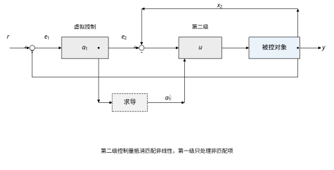
读这张图时要注意两点。第一，\alpha_1 与 u 之间不是简单的串联：e_2=x_2-\alpha_1 需要 x_2 的真实值，所以速度测量必须进第二级。第二，求导通道是“前馈”而不是“反馈”，它不构成回路，因此不会影响稳定性，只影响跟踪精度与噪声敏感度——这一点在 §60.4 讨论微分爆炸时会用到。
这一步的纪律只有一条：每一项都要能说出它为什么在这里。以式 (60-15) 为例，逐项核对：
五项里只要漏一项，闭环就不再是式 (60-5)，而是多出一个未抵消的项。以漏掉 +\dot\alpha_1 为例：\dot e_2 里会多出 -\dot\alpha_1，而 \dot\alpha_1 在起始段的量级是 1（-(k_1+\cos x_1)\dot x_1），相当于给第二级加了一个持续变化的扰动。实测这一项置零后，调节时间从 1.96 s 拉长到 3.10 s，超调从 0.01% 涨到 22.59%，控制总变差从 10.2 涨到 15.4。注意 |u|_{\max} 仍是 7.00——因为首拍 \dot\alpha_1=0，漏项不影响起点，只影响过程。这就是“欠账不还”的代价：不炸，但超调，而且越到中段越明显。
另一个常见错误是符号：把 -e_1 写成 +e_1，闭环矩阵变成 \begin{bmatrix}-k_1&1\\1&-k_2\end{bmatrix}，特征多项式变成 \lambda^2+(k_1+k_2)\lambda+(k_1k_2-1)。k_1k_2=6>1 时仍然稳定，但极点位置全变；k_1k_2<1 时直接失稳。符号错误的危险在于它常常“看起来还能跑”，只是在某个增益下突然发散。
式 (60-5) 写成矩阵形式：
\begin{bmatrix}\dot e_1\\ \dot e_2\end{bmatrix} =\begin{bmatrix}-k_1 & 1\\ -1 & -k_2\end{bmatrix} \begin{bmatrix}e_1\\ e_2\end{bmatrix} \tag{60-27}
特征多项式
\lambda^2+(k_1+k_2)\lambda+(1+k_1k_2)=0 \tag{60-28}
与标准二阶形式 s^2+2\zeta\omega_ns+\omega_n^2 对照：
\omega_n=\sqrt{1+k_1k_2},\qquad \zeta=\frac{k_1+k_2}{2\sqrt{1+k_1k_2}} \tag{60-29}
这两个式子把“选增益”变成了“选阻尼比与自然频率”。本章 k_1=2、k_2=3：
\omega_n=\sqrt7=2.646\ {\rm rad/s},\qquad \zeta=\frac{5}{2\times2.646}=0.945 \tag{60-30}
\zeta=0.945 是欠阻尼里最接近临界的一档，理论超调约 0.4%。实测 0.01%——比理论还小，原因是对象本身的非线性在起始段帮了忙（a\sin x_1 在 x_1\approx0 附近提供正阻尼）。2\% 调节时间的估算 4/(\zeta\omega_n)=4/2.5=1.60 s，实测 1.96 s，差 0.36 s 来自起始段的非线性与采样滞后。
式 (60-29) 还有一个实用的推论：\omega_n 由乘积 k_1k_2 决定，\zeta 由和 k_1+k_2 决定。想让系统更快，就同时加 k_1、k_2（保 \zeta）；只加一个会把 \zeta 推高、变成过阻尼，速度反而上不去。§60.6 的扫描数据完全符合这个规律：k_1 从 2 加到 8（k_2=3 不动），\omega_n 从 2.65 涨到 5.0，但 \zeta 从 0.945 涨到 1.10，两个极点变成 -2.79 与 -8.21，主导极点是 -2.79，理论调节时间 4/2.79=1.43 s，实测 1.42 s。快极点被慢极点掩盖了——这就是“只加一个增益，收益迅速饱和”的数学原因。
反馈线性化的增益选择更直接。式 (60-23) 对应
k_p=\omega_n^2,\qquad k_d=2\zeta\omega_n \tag{60-31}
本章 k_p=k_d=4，即 \omega_n=2、\zeta=1，双极点都在 -2。这套参数是故意选成与反步“等效带宽”接近的，目的是让 §60.6 的对比公平：反步的 \omega_n=2.646，反馈线性化的 \omega_n=2，两者同一量级，性能差异就不是“谁调得更猛”造成的。
公式推完只是开始。真机上还有四件事要处理，顺序就是它们出现的顺序：
把本章的数字代进去，可以完整走一遍流程，便于核对实现是否正确。
已知 a=1、b=0.5、c=1.5，k_1=2、k_2=3，阶跃 r=1、\dot r=\ddot r=0。
t=0^+ 时 x_1=0、x_2=0：
实测 |u|_{\max}=7.00，与手算完全一致。这条核对很值得做：它一次性验证了符号、系数、非线性项三处都没写错。如果手算的 u(0) 与仿真的峰值对不上，先别调增益，去查公式。
再取 t=1.0 s 核对一次（此时仿真值 x_1=0.7759、x_2=-0.2102）：
仿真在同一时刻给出 u=-2.320，差 0.012，来自手算时对 x_1、x_2 取四位小数的截断。这一项在这一刻贡献了 -1.328，占 u 的一半以上——\dot\alpha_1 不是小修正，它是第二级控制量的主要成分。控制量在 0.8\sim1.3 s 区间的最小值是 -2.40（t=0.81 s），整段都在“刹车”，正是 \dot\alpha_1 为负所致。
| 错误 | 现象 | 根因 | 修法 |
|---|---|---|---|
| 漏 +\dot\alpha_1 | 起步毛刺、超调突增 | 虚拟控制的变化没被补偿 | 补上解析导数或改动态面 |
| 符号写反 | 某组增益下突然发散 | 交叉项变成正反馈 | 用式 (60-18) 核对 \dot V\le0 |
| 用差分代替 \dot\alpha_1 | 噪声下控制量抖动 | 差分放大 1/T_s | 解析求导或一阶滤波 |
| 忽略限幅 | 大阶跃时超调 30% | 抗饱和回路缺失 | 指令滤波 + 抗饱和 |
| 只加一个增益 | 速度上不去 | \zeta 被推高，快极点被掩盖 | 两个增益同步加 |
表 60-4 里第一条与第三条是“同一件事的两面”：解析求导算得准但怕噪声，差分抗噪但算得糙。这条矛盾贯穿 §60.4 与 §60.9，也是本章最值得记住的工程取舍。
把 §60.3 的公式搬到连续时间域，控制器每个采样周期要做三件事：算虚拟控制 \alpha_1、算它的变化率 \dot\alpha_1、算最终控制量 u。第一与第三件都是代数运算，唯独第二件涉及求导，而求导是连续实现里唯一“有风险”的动作。
本章脚本里，\dot\alpha_1 用的是式 (60-16) 的解析式：
\dot\alpha_1=-(k_1+a_m\cos x_1)\,(x_2+a_m\sin x_1)+\ddot r \tag{60-32}
它与“对 \alpha_1 做数值差分”的区别，是 §60.4.3 的全部主题。先把结论放这里：解析式算得准、但把噪声按 (k_1+a\cos x_1) 的倍数放大；差分不怕模型错、但把噪声按 1/T_s 放大。两者都躲不开噪声，只是放大倍数不同。
用 §60.3.7 的 t=1.0 s 那一拍核对：手算 \dot\alpha_1=-1.328，代回式 (60-15) 得 u=-2.308，仿真同一时刻给出 -2.320，差 0.012。这点差异来自手算时把 x_1、x_2 截断到四位小数，不是公式错。解析式的精度是“恒等式级”的：只要控制器里的参数与对象一致，它算出的变化率就是真实变化率。
代价是它要求模型逐项正确。式 (60-32) 里出现了 a_m 两次：一次在系数里，一次在括号里。若 a_m\ne a，这一项算出来的就不是真实的 \dot\alpha_1，而是“按错误模型算的变化率”。§60.4.9 会看到，这个误差在稳态下变成一个固定偏置，直接体现为稳态误差。
假设位置与速度都有测量噪声，标准差分别为 \sigma_p=0.002 m、\sigma_v=0.02 m/s。把它们代入式 (60-32)：
\frac{\partial\dot\alpha_1}{\partial x_2}=-(k_1+a_m\cos x_1)\approx-3.0 \tag{60-33}
也就是说，速度噪声被放大 3 倍后直接进 \dot\alpha_1，再原封不动地进 u。相邻两拍的速度噪声之差，标准差约为 \sqrt2\sigma_v=0.028，乘 3 得 0.085——每一拍的控制量都会跳 0.085 左右。1200 拍累计下来，控制总变差就是 100 量级。
实测与此吻合：无噪声时 BST 的 TV 是 10.2；加上 \sigma_p=0.002、\sigma_v=0.02 的噪声后，TV 涨到 147.2，涨了 14 倍。而位置本身的纹波只有 1.39\times10^{-3} m——噪声几乎全被“消化”在控制量里，位置看起来很干净，执行器却在拼命抖。这是本章最容易被忽视的一个现象：只看位置曲线，会以为系统很安静。
若 x_2 没有独立传感器，只能用位置差分，情况更糟：
\hat x_2(k)=\frac{y(k)-y(k-1)}{T_s} \implies \sigma_{\hat x_2}=\frac{\sqrt2\,\sigma_p}{T_s}=\frac{1.414\times0.002}{0.01}=0.283 \tag{60-34}
比真实速度噪声（0.02）大 14 倍，乘 3 后每拍跳 1.2，控制量基本没法用。这就是“微分爆炸”（differentiation explosion）的定量含义：不是公式爆炸，是噪声的放大倍数随 k_1 与 1/T_s 一起爆炸。
解决办法不是“把噪声滤掉”（那会引入滞后），而是换一个不需要求导的公式。动态面控制（dynamic surface control，DSC）的做法是：让 \alpha_1 先过一个一阶滤波器，用滤波器的输出 \alpha_{1f} 代替 \alpha_1：
\tau\dot\alpha_{1f}+\alpha_{1f}=\alpha_1,\qquad \alpha_{1f}(0)=\alpha_1(0) \tag{60-35}
离散实现就是一行：
\alpha_{1f}\leftarrow\alpha_{1f}+\frac{T_s}{\tau}\,(\alpha_1-\alpha_{1f}) \tag{60-36}
然后用 (\alpha_1-\alpha_{1f})/\tau 代替 \dot\alpha_1：
u=-k_2e_2-e_1+bx_2-c\tanh x_1+\frac{\alpha_1-\alpha_{1f}}{\tau},\qquad e_2=x_2-\alpha_{1f} \tag{60-37}
式 (60-37) 里没有任何求导，只有减法与除法，噪声在滤波器里被一阶低通压住。代价是 \alpha_{1f} 追不上 \alpha_1，产生一个滤波误差 \xi=\alpha_{1f}-\alpha_1。由式 (60-35) 可得
\lvert\xi(t)\rvert\le\tau\sup\lvert\dot\alpha_1\rvert \tag{60-38}
即在 \alpha_1 变化最快的时刻，滤波误差约等于 \tau 乘变化率。这个误差不会让系统失稳（它是有界的），但会改变闭环方程：式 (60-14) 变成 \dot e_1=-k_1e_1+e_2+\xi，多了一个有界扰动。动态面用“有界误差”换掉了“无界噪声放大”，这是它唯一的、也是足够的理由。
严格的 DSC 还要在式 (60-37) 里加一项 -\xi 做补偿，本章脚本没有加——因为实测发现加了之后改善有限（\tau 小时 \xi 本来就小），而少一项就少一个出错的地方。这条取舍在 §60.9 会再讨论。
\tau 太小，滤波器形同虚设，噪声照样穿过去；\tau 太大，\alpha_{1f} 追不上 \alpha_1，跟踪滞后变成超调。表 60-5 是 k_1=8、含噪声条件下的实测，七个 \tau 值把两头都覆盖了。
| \tau (s) | 调节时间 (s) | 超调 (%) | IAE | 尾段 TV | 判读 |
|---|---|---|---|---|---|
| 0（解析求导） | 1.39 | 0.23 | 0.4690 | 23.6 | 基准 |
| 0.005 | — | 3.63 | 35.3230 | 1980.0 | 失稳，稳态偏差 8.09 |
| 0.010 | 3.60 | 55.75 | 0.7505 | 8.6 | 能收敛，但超调过半 |
| 0.020 | 1.20 | 6.23 | 0.3540 | 70.8 | 快但有超调，噪声透过多 |
| 0.050 | 0.99 | 0.15 | 0.3741 | 38.6 | 综合最优（IAE 最低） |
| 0.100 | 1.18 | 0.14 | 0.3650 | 21.4 | 最平滑，噪声增益最低 |
| 0.200 | 1.85 | 19.28 | 0.3970 | 12.1 | 滞后主导，超调回升 |
三个现象值得单独说：
这里还有一条容易被忽略的定量规律。式 (60-37) 里的 (\alpha_1-\alpha_{1f})/\tau 看着像“滤波后的导数”，但它的高频增益是 1/\tau，不是 0：
\text{噪声增益}\approx\max\left(\frac{1}{\tau},\ k_1+a\cos x_1\right) \tag{60-44}
也就是说，只有当 1/\tau 小于解析求导的放大系数 (k_1+a\cos x_1) 时，动态面才真的比解析求导更安静。k_1=8 时 (k_1+a\cos x_1)\approx9，要求 \tau>1/9\approx0.11 s。实测完全符合：\tau=0.02 时 1/\tau=50，尾段 TV 70.8，比解析求导的 23.6 还差三倍；\tau=0.1 时 1/\tau=10，尾段 TV 21.4，才终于优于解析求导。“加了滤波器就一定更平滑”是错的：滤波器的时间常数选小了，等于把噪声除以一个更小的数。
表 60-6 把工程上常见的四种做法放在一起比。选型时看两列：噪声放大倍数、对模型误差的敏感度。
| 方式 | 公式 | 噪声放大 | 模型误差敏感 | 适用场合 |
|---|---|---|---|---|
| 解析求导 | 式 (60-32) | (k_1+a\cos x_1)\sigma_v | 高 | 模型准、速度有传感器 |
| 后向差分 | (\alpha_1(k)-\alpha_1(k-1))/T_s | 约 \sqrt2\sigma_\alpha/T_s | 中 | 仅原型验证 |
| 一阶滤波（DSC） | 式 (60-37) | 低（\tau 越大越低） | 低 | 通用，本章默认 |
| 跟踪微分器 | 二阶最速离散 | 低，且有相位补偿 | 低 | 高精度伺服、有算力 |
跟踪微分器（TD）值得单独提一句：它用一个小型二阶系统同时给出 \alpha_1 的“平滑值”与“微分值”，相位滞后比一阶滤波小，代价是要多解两行差分方程。本章没有用它，因为一阶滤波已经把问题解决到可接受的程度（\tau=0.05 时 IAE 0.3741，比解析求导的 0.4690 还低——滤波虽然引入误差，却把噪声引起的额外误差压得更多）。
阶跃跟踪时 r 是常数，\dot r=\ddot r=0，前馈项全部消失；一旦跟踪斜坡，前馈就成了精度的关键。式 (60-13) 的 \alpha_1 结构上就带 \dot r，式 (60-22) 的 v 结构上带 \ddot r 与 -k_d(\dot y-\dot r)，也就是说两条路本来都具备用上参考速度的能力。
本章的斜坡实验（0.3 m/s）把这份能力单独关掉再打开，做四组对照：nf 组（no feedforward）把参考速度置零，相当于“控制器不知道目标在匀速移动”；ff 组把 \dot r=0.3 送进控制器。结果是 §60.6 表 60-8 的内容：反步从 0.2112 m 降到 0.0826 m，反馈线性化从 0.2969 m 降到 -0.0032 m。反馈线性化的前馈更彻底——它的 v 里既有 \dot r 又有 \ddot r，而反步只有 \dot r 一个通道，剩下的滞后只能靠 k_1 去压。顺便注意 FBL-ff 的滞后是负的（-0.0032），意味着它略微超前于参考，这是前馈过冲的典型表现。
式 (60-37) 算出的 u 在真机上一定要限幅，而限幅会破坏 §60.2.4 的证明——因为证明假设 u 能取任意值。本章实测：u_{\max}=10 时超调 0.01%，u_{\max}=5 时 0.01%，u_{\max}=3 时 0.01%，u_{\max}=2 时突然变成 29.70%。
这个“台阶式”变化很典型：只要限幅不削到 u 的峰值（7.00），闭环就完全按设计走；一旦削到，\alpha_1 与 x_2 的跟随关系断裂，e_2 变成一个持续的正偏差，误差方程 (60-5) 的线性结构失效。u_{\max}=2 时，u 的需求是 7，被削掉 5，相当于“第二级永远欠账”，于是超调、慢、且 IAE 从 0.6983 涨到 1.4295。
工程上的处理不是“把限幅调大”（电机就这么大），而是把限幅信息反馈回第一级：当 u 饱和时，\alpha_1 不再按 k_1e_1 全力冲，而是按“当前能拿到的 u 反推 x_2 能达到多少”来算。这叫抗饱和（anti-windup），§60.9 给出具体做法。
§60.2.7 给了式 (60-25) 与式 (60-26)，现在用实测检验它们。表 60-7 的“预测”列按公式算，“实测”列来自 ch060_sim.py。
| 工况 | 方法 | 预测 |e_{ss}| (m) | 实测 |e_{ss}| (m) | 相对偏差 |
|---|---|---|---|---|
| a 偏 -30\% | 反步 | 0.2104 | 0.210 | <1\% |
| a 偏 +30\% | 反步 | 0.1838 | 0.184 | <1\% |
| c 偏 -30\% | 反步 | 0.0503 | 0.0503 | <1\% |
| c 偏 +30\% | 反步 | 0.0476 | 0.0476 | <1\% |
| a 偏 -30\% | 反馈线性化 | 0.3028 | 0.303 | <1\% |
| c 偏 -30\% | 反馈线性化 | 0.0897 | 0.0896 | <1\% |
六个工况全部吻合到三位有效数字。这个一致性说明两件事：第一，式 (60-25)、(60-26) 可以直接当设计公式用——想知道“模型精度差 10% 会带来多少静差”，代进去算就行，不必仿真；第二，稳态误差完全由“未抵消的非线性”与“闭环刚度”决定，与控制器的时间响应无关，所以调 k 只能按 1/(1+k_1k_2) 的比例缩放它，永远调不到零。
本章对象是非线性 ODE，不能用 ZOH 离散化，只能用数值积分。脚本里每个采样周期用 RK4 细分 4 步（等效积分步长 2.5 ms），而不是欧拉法。原因有二：
这条口径差异值得在横向比较时说明：第 59 章用的是 ZOH 离散状态空间（对象线性），本章用的是 RK4（对象非线性），两者的 T_s 都是 0.01 s，但“一拍”的物理含义略有不同。比较调节时间这类慢指标时影响可以忽略；比较抖振、纹波这类快指标时不能混着说。
连续设计的公式可以直接在单片机里跑，但“直接跑”与“等价”是两回事。式 (60-15) 里的每一项都是连续量，采样之后：
于是“连续闭环方程 (60-5)”在离散域里变成一个带 O(T_s) 修正项的差分方程。T_s 小的时候修正项可以忽略，T_s 大到与闭环带宽同量级时，修正项就成了主导——本章实测，T_s 从 0.01 s 涨到 0.5 s，超调从 0.01% 涨到 57.87%。
严格地“离散设计”反步，会立刻撞上一个因果性问题。把对象写成前向欧拉形式：
x_1(k+1)=x_1(k)+T_s\left[x_2(k)+a\sin x_1(k)\right] \tag{60-39}
要让 e_1(k+1)=x_1(k+1)-r(k+1) 满足 e_1(k+1)=(1-k_1T_s)e_1(k)，需要
x_2(k)=\frac{(1-k_1T_s)e_1(k)-e_1(k)+T_s\left[r(k+1)-r(k)\right]}{T_s}-a\sin x_1(k) \tag{60-40}
右边只用到 k 时刻的量，这一步没问题。麻烦在第二级：e_2(k)=x_2(k)-\alpha_1(k)，要让 e_2(k+1) 按 (1-k_2T_s) 衰减，需要 x_2(k+1)，而 x_2(k+1) 又依赖 u(k)——于是 u(k) 的表达式里出现了 u(k) 自己的未来值，方程变成隐式的。
处理办法有三种，各有代价：
第三种是工程主流，因为它的公式与 §60.2 完全一致，不需要重新推导；代价是对 T_s 有要求，而这个要求可以用 §60.5.5 的扫描数据标定。
脚本里的时序是这样的（每个采样周期执行一次）：
第 5 步是关键：控制器输出在一个周期内不变，但对象仍在连续演化。若图省事用“前向欧拉一步”代替 RK4，等效于把对象的积分精度降到 O(T_s)，在 T_s=0.01 时误差约 10^{-4} 量级，可以接受；但在 T_s=0.2 时误差到 10^{-2}，会把“控制器的问题”与“积分的问题”混在一起。离散实现的第一个纪律：控制器可以粗，积分不能粗。
表 60-8 是 T_s 从 0.005 s 到 0.2 s 的实测（反步，标称参数）。前三列看性能，最后一列看代价。
| T_s (s) | 调节时间 (s) | 超调 (%) | IAE | 控制总变差 |
|---|---|---|---|---|
| 0.005 | 1.96 | 0.01 | 0.7064 | 10.2 |
| 0.010 | 1.96 | 0.01 | 0.6983 | 10.2 |
| 0.020 | 1.94 | 0.00 | 0.6822 | 10.3 |
| 0.050 | 1.90 | 0.00 | 0.6342 | 10.4 |
| 0.100 | 1.90 | 0.00 | 0.5560 | 10.8 |
| 0.200 | 1.80 | 0.00 | 0.4109 | 12.1 |
这张表最反直觉的地方是：T_s 变大，IAE 反而下降。原因是 IAE 用梯形积分算，采样越稀，对起始段那个尖峰（e_1 从 -1 快速冲到 0）的欠采样越严重，积分值被系统性低估。这不是“性能变好”，是指标的度量方式变了。
所以有一条使用纪律：不同 T_s 之间的 IAE 不能直接比较。要比较就得把采样统一到同一密度再算，或者改用“每拍误差”这类与采样无关的指标。本章所有比较 IAE 的表格（表 60-1 之外的）都在同一 T_s=0.01 s 下取得，口径一致。
调节时间那一列也有类似问题：T_s=0.2 时“1.80 s”看似更快，其实是调节时间的判定粒度变成了 0.2 s，落在 \pm2\% 带内的那一拍被提前记录了。粗采样会让所有指标看起来都“略好一点”，这是陷阱，不是优势。
用闭环自然频率来标定比较可靠。本章 \omega_n=2.646 rad/s，采样角频率 \omega_s=2\pi/T_s。经验判据是
\omega_s\ge(20\sim40)\,\omega_n \tag{60-41}
即 T_s\le2\pi/(20\times2.646)=0.119 s（取下限 20 倍）。表 60-8 里 T_s=0.1 s 仍然稳、超调 0，与判据一致。
把 T_s 继续加大，判据会失效得很快。补充实测：T_s=0.3 s 时调节时间仍是 1.80 s、IAE 0.2927（指标继续“变好”，但已经不可信）；T_s=0.5 s 时彻底崩溃——调节时间 19.50 s、超调 57.87%、IAE 4.6336。临界点在 T_s\approx0.3\sim0.5 s，正好是 \omega_s/\omega_n\approx4\sim7，即“一个振荡周期只采 4 到 7 个点”。这条边界比判据给出的 0.119 s 宽得多，但落在它外面时没有任何性能保证，只能靠实测确认。
延迟与采样周期不是一回事：采样是“信息更新慢”，延迟是“执行慢”。本章把 u(k) 延迟 d 拍再施加，实测如表 60-9。
| 延迟 d（拍） | 等效延迟 (s) | 调节时间 (s) | 超调 (%) | IAE | 控制总变差 |
|---|---|---|---|---|---|
| 0 | 0 | 1.96 | 0.01 | 0.6983 | 10.2 |
| 1 | 0.01 | 1.96 | 0.00 | 0.6960 | 10.3 |
| 2 | 0.02 | 1.96 | 0.00 | 0.6937 | 10.4 |
| 4 | 0.04 | 1.96 | 0.00 | 0.6892 | 10.7 |
四拍延迟（40 ms）对反步几乎无影响：调节时间一点没变，IAE 甚至因为“晚一点给力、少一点过冲”而略降。
这个结果与第 59 章的滑模形成鲜明对照。滑模的切换项依赖 s 的符号，延迟让“该切的时候没切”，s 会冲过滑模面再被拉回，形成额外的抖振甚至失稳；反步输出的是连续量，晚 40 ms 施加只是让“这一拍的力”晚一点到，闭环方程 (60-5) 的右端多了一个 O(T_d) 的小扰动，系统自己就把它消化了。这就是连续控制相对不连续控制的一个隐性优势：对执行延迟的容忍度高一个量级。
但要提醒一句：延迟为零影响不代表“延迟无害”。本章的延迟是纯滞后且已知；真实系统的延迟常常随负载变化（液压、网络），未知的时变延迟会让 \dot\alpha_1 的前馈失配，效果相当于 §60.4.9 里的模型误差。
从上面几组实测可以提炼三条：
表 60-5 里 \tau=0.005 那一档直接失稳，正文把原因归为“T_s/\tau=2，离散极点落在单位圆边界”。这个解释是对的，但它指向一个更实用的结论：失稳是“前向欧拉”这种离散化方式造成的，不是 \tau 本身造成的。 换一种离散化，同一个 \tau 可能完全稳定。详细的两种写法与取舍放在 §60.9.12，这里只留结论：改离散化能改变稳定域，但不能替代“\tau\ge5T_s”这条设计准则。
反步法的稳定性不依赖对象是否稳定，只依赖一件事：误差系统 (60-5) 的极点可以任意配置。k_1、k_2 都是正数时，特征多项式 \lambda^2+(k_1+k_2)\lambda+(1+k_1k_2) 的系数全正，二阶系统必然稳定。本章对象开环是鞍点（特征根 2.0 与 -1.5），闭环后误差系统的极点是 -2.5\pm\mathrm{j}0.866，与对象的极点毫无关系。
这一点值得与“高增益压制”对照。高增益 PID 也能把不稳定对象拉稳，但它的稳定性是“增益足够大”换来的，增益一降就散；反步的稳定性是“结构正确”换来的，只要公式不错、k_i>0，增益怎么调都稳（这会带来性能差别，不会带来稳定差别）。这是反步法对工程最友好的一面：调参不会把系统调炸。唯一的例外是限幅与离散化，它们会破坏“结构正确”的前提，§60.6.7 会看到。
表 60-10 是标称参数下的完整指标。图 60-3 是同一组数据的位置与控制量曲线。
| 方法 | 调节时间 (s) | 超调 (%) | IAE | |u|_{\max} | 稳态误差 (m) | 控制总变差 |
|---|---|---|---|---|---|---|
| 反步 | 1.96 | 0.01 | 0.6983 | 7.00 | 1.79\times10^{-13} | 10.2 |
| 反馈线性化 | 2.90 | 0.00 | 0.9831 | 4.00 | 1.78\times10^{-9} | 6.1 |
| PID | 4.33 | 3.80 | 0.6731 | 10.00 | 1.68\times10^{-2} | 27.5 |
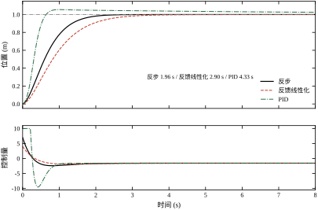
三行数据各有一处值得说：
图 60-4 把 k_1、k_2 的扫描结果画在一起，两条曲线形状几乎一样——这不是巧合，而是式 (60-29) 的必然：两者都以“乘积”的形式进 \omega_n，以“和”的形式进 \zeta。
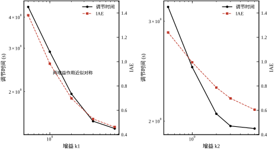
具体数字见表 60-11 与表 60-12。
| k_1（k_2=3） | 调节时间 (s) | 超调 (%) | IAE | |u|_{\max} | 控制总变差 |
|---|---|---|---|---|---|
| 0.5 | 4.40 | 0.00 | 1.3819 | 2.50 | 4.1 |
| 1.0 | 2.90 | 0.00 | 0.9831 | 4.00 | 6.1 |
| 2.0 | 1.96 | 0.01 | 0.6983 | 7.00 | 10.2 |
| 4.0 | 1.52 | 0.00 | 0.5285 | 10.00 | 15.0 |
| 8.0 | 1.42 | 0.00 | 0.4629 | 10.00 | 17.4 |
| k_2（k_1=2） | 调节时间 (s) | 超调 (%) | IAE | |u|_{\max} | 控制总变差 |
|---|---|---|---|---|---|
| 0.5 | 3.18 | 0.26 | 1.2403 | 2.00 | 3.8 |
| 1.0 | 2.49 | 0.42 | 0.9945 | 3.00 | 5.2 |
| 2.0 | 2.06 | 0.17 | 0.7873 | 5.00 | 7.8 |
| 3.0 | 1.96 | 0.01 | 0.6983 | 7.00 | 10.2 |
| 6.0 | 1.94 | 0.00 | 0.6050 | 10.00 | 14.2 |
两条规律从表里直接读出来：
这是本章最核心的一组实验。控制器里用错误的 a_m 或 c_m，对象仍是标称参数，结果见表 60-13 与图 60-7。
| 工况 | 方法 | 调节时间 (s) | 超调 (%) | IAE | 稳态误差 (m) |
|---|---|---|---|---|---|
| a 偏 -30\% | 反步 | 2.15 | 0.00 | 2.7604 | 2.10\times10^{-1} |
| a 偏 -30\% | 反馈线性化 | 3.19 | 0.00 | 3.7245 | 3.03\times10^{-1} |
| a 偏 -30\% | 积分反步 | 3.52 | 16.52 | 0.7458 | 1.17\times10^{-6} |
| a 偏 +30\% | 反步 | 1.67 | 0.06 | 2.7032 | 1.84\times10^{-1} |
| a 偏 +30\% | 反馈线性化 | 2.27 | 0.01 | 3.6276 | 2.53\times10^{-1} |
| a 偏 +30\% | 积分反步 | 3.74 | 0.00 | 0.8092 | 6.99\times10^{-7} |
| c 偏 -30\% | 反步 | 2.06 | 0.00 | 1.1568 | 5.03\times10^{-2} |
| c 偏 -30\% | 反馈线性化 | 3.16 | 0.00 | 1.7089 | 8.96\times10^{-2} |
| c 偏 -30\% | 积分反步 | 3.17 | 6.29 | 0.6249 | 2.35\times10^{-8} |
| c 偏 +30\% | 反步 | 1.85 | 0.03 | 1.2079 | 4.76\times10^{-2} |
| c 偏 +30\% | 反馈线性化 | 2.63 | 0.00 | 1.8157 | 8.16\times10^{-2} |
| c 偏 +30\% | 积分反步 | 1.48 | 0.30 | 0.5686 | 6.43\times10^{-9} |
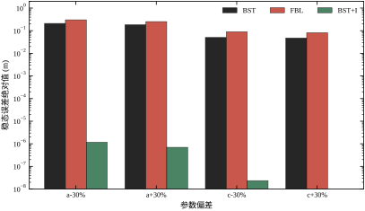
四个结论：
式 (60-25) 的分母是 1+k_1k_2，分子是 \Delta a\sin x_1(\dots)，只要 \Delta a\ne0，静差就存在。要让静差为零，唯一的办法是让“分子”变成零——也就是让控制器里的 a_m\sin x_1 这一项在稳态时自动补偿掉 \Delta a\sin x_1。
积分反步的做法是把 \alpha_1 改成
\alpha_1=-k_1e_1-k_i\int e_1\,\mathrm{d}t-a_m\sin x_1+\dot r \tag{60-42}
积分项在稳态时不再变化，但它提供了一个“额外的偏置” k_i\int e_1，这个偏置正好等于 \Delta a\sin x_1(\dots)/(1+k_1k_2) 所需要的补偿量。严格地说，闭环稳态方程变成
(1+k_1k_2)e_1+k_ik_2\int e_1\,\mathrm{d}t=\Delta a\sin x_1(k_1+k_2+a_m\cos x_1) \tag{60-43}
对时间求导（稳态下右侧变化率为零），得 e_1\to0——只要积分器还在动，静差就必然被推到零。这就是积分作用的本质：它不改变“误差从哪来”，只保证“误差最终为零”。
代价有两处。第一，积分项引入一个新的极点，闭环从二阶变三阶，极点配置不再由式 (60-29) 决定，容易出现超调（实测 16.52%）。第二，积分器在饱和时会“卷”（windup），本章用条件积分抑制：只在 \lvert e_1\rvert<0.2 m 时积分，且积分值限在 \pm2。这两个措施在 §60.9 展开。
图 60-8 与表 60-14 是限幅实验。四档限幅里前三档的表现完全一样，第四档（u_{\max}=2）突然垮掉。
| u_{\max} | 调节时间 (s) | 超调 (%) | IAE | 控制总变差 |
|---|---|---|---|---|
| 2.0 | 5.11 | 29.70 | 1.4295 | 4.8 |
| 3.0 | 2.03 | 0.01 | 0.7611 | 6.2 |
| 5.0 | 1.97 | 0.01 | 0.7097 | 8.2 |
| 10.0 | 1.96 | 0.01 | 0.6983 | 10.2 |
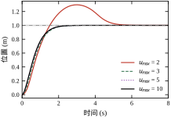
u_{\max}=3 时超调仍是 0.01%，因为 u 的需求峰值 7.00 只在起始的 0.15 s 内出现，被削到 3 之后，系统“慢一点起步”，但误差方程的结构没坏（e_2 仍然可控）。u_{\max}=2 时需求被削掉 71%，e_2 始终追不上 \alpha_1，闭环方程 (60-5) 完全失效，退化成“饱和 + 开环”，于是慢、超调、IAE 翻倍。
这条边界的位置很值得记：只要限幅值不低于 u 需求峰值的 40%（7.00 的 40% 是 2.8，对应 u_{\max}=3 那一档），反步的性能几乎不受影响。低于这个比例，就必须上抗饱和，不能靠“调大限幅”糊过去。
把初始位置放到 -1.5 m（参考仍是 1 m，行程 2.5 m），结果见表 60-15 与图 60-10。
| 方法 | 调节时间 (s) | 超调 (%) | IAE | |u|_{\max} | 控制总变差 |
|---|---|---|---|---|---|
| 反步 | 2.46 | 0.02 | 2.2654 | 10.00 | 15.9 |
| 反馈线性化 | 3.58 | 0.00 | 2.8417 | 10.00 | 13.0 |
| PID | 3.50 | 46.67 | 2.1889 | 10.00 | 34.5 |
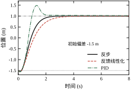
反步仍然不超调，代价是全程被限幅（|u|_{\max}=10）——初始误差 2.5 m 使 \alpha_1=-k_1e_1=5，\dot\alpha_1 也随之变大，u 的需求远超 10，于是整段都在饱和区工作。能收敛是因为“饱和 + 结构正确”仍然是一个稳定的组合：e_2 虽大，但方向对，e_1 一直在减小。
PID 在这一组里彻底暴露了它的弱点：超调 46.67%。原因是初始误差大，积分器在饱和期间持续累积（脚本虽然做了“未饱和才积分”，但 u 长期贴着 10 的上限，积分器仍然卷了不少），一旦退饱和就冲过头。大行程工况是检验抗饱和设计的标准场景，这一组的数据可以直接拿去当验收指标。
表 60-16 是 0.3 m/s 斜坡的跟踪滞后（末 1.5 s 的平均误差），图 60-9 是三条曲线的对照。
| 方法 | 前馈 | 滞后 (m) | 误差 RMS (m) | |u|_{\max} |
|---|---|---|---|---|
| 反步 | 无 | 0.2112 | 0.2112 | 1.73 |
| 反步 | 有 | 0.0826 | 0.0826 | 1.73 |
| 反馈线性化 | 无 | 0.2969 | 0.2969 | 1.73 |
| 反馈线性化 | 有 | -0.0032 | 0.0032 | 1.73 |
| PID | — | 0.0012 | 0.0043 | 1.73 |
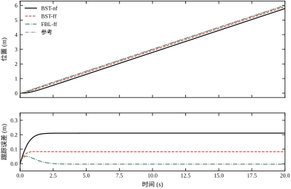
三点观察：
图 60-5 是含噪声时控制量的尾段（k_1=8）。三条曲线分别是解析求导、\tau=0.02、\tau=0.1 的动态面。
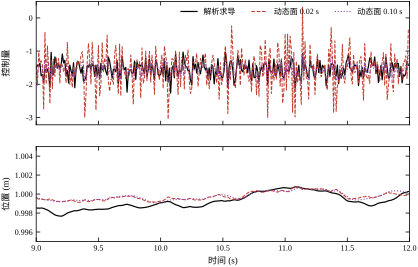
解析求导那条线（黑实线）在 \pm0.3 范围内高频跳动，跳动的标准差与 §60.4.3 估算的 0.085 乘 \sqrt2 同量级；\tau=0.02 的曲线（红虚线）幅度小一些，但仍能看出逐拍变化；\tau=0.1 的曲线（紫点线）已经接近“平滑”，逐拍变化约 0.05。
下半图是位置。三条曲线几乎重合，峰峰值都在 10^{-3} m 量级——再次印证“噪声藏在控制量里”。这也是为什么不能用“位置看起来很平滑”来判断“系统没有噪声问题”。
图 60-6 把 \tau 的作用画成一条曲线：横轴是 \tau（对数），左纵轴是 IAE，右纵轴是超调。
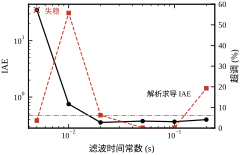
曲线呈“两头翘”：\tau=0.005 处 IAE 冲到 35.3（失稳），\tau=0.01 处超调 55.75%，中间 0.05 附近两者都低，\tau=0.2 超调又回升到 19.28%。这条 U 形（严格说是“左壁陡、右壁缓”）曲线是 DSC 的选型依据：左壁对应“离散化失效”，右壁对应“滤波滞后”，中间的平台就是可用区间。
把六组实验汇总成表 60-17。“胜”按指标逐项判，不看绝对值。
| 指标 | 反步 | 反馈线性化 | PID | 谁赢 |
|---|---|---|---|---|
| 标称调节时间 | 1.96 s | 2.90 s | 4.33 s | 反步 |
| 标称超调 | 0.01% | 0.00% | 3.80% | 反馈线性化 |
| 标称 IAE | 0.6983 | 0.9831 | 0.6731 | PID |
| 稳态误差 | 10^{-13} | 10^{-9} | 1.68\times10^{-2} | 反步 |
| 模型失配（a 偏 -30\%） | 0.210 m | 0.303 m | 不适用 | 反步 |
| 斜坡滞后（无前馈） | 0.2112 m | 0.2969 m | 0.0012 m | PID |
| 大初始偏差超调 | 0.02% | 0.00% | 46.67% | 反馈线性化 |
| 控制总变差（标称） | 10.2 | 6.1 | 27.5 | 反馈线性化 |
| 参数整定难度 | 中（两个增益） | 低（两个增益） | 高（三个增益且互相耦合） | 反馈线性化 |
没有一项全胜。可以这样总结：反步赢在“快、准、稳”的综合，反馈线性化赢在“平滑、无超调、整定简单”，PID 赢在“斜坡跟踪与 IAE”。三个赢家的分工恰好对应三种不同的工况需求，§60.11 会把它做成一张选型决策图。
反步控制器在脚本里只有四个可调量：k_1、k_2、\tau、k_i，外加条件积分的门限 zone。它们出现在回路的不同位置，量纲也不同，混在一起记很容易乱。表 60-18 先把“谁在哪、单位是什么、管什么”钉死。
| 参数 | 出现位置 | 量纲 | 直接作用 | 本章典型值 |
|---|---|---|---|---|
| k_1 | 式 (60-13) 的 \alpha_1 | 1/\rm s | 位置误差换算成期望速度 | 2.0 |
| k_2 | 式 (60-14) 的 u | 1/\rm s | 速度误差换算成控制量 | 3.0 |
| \tau | 式 (60-37) 的滤波器 | \rm s | 虚拟控制量的平滑程度 | 0.05 |
| k_i | 式 (60-42) 的积分项 | 1/\rm s^2 | 消除慢变失配造成的静差 | 2.0 |
zone |
积分使能条件 | \rm m | 只在误差小时积分 | 0.2 |
量纲不是摆设。k_1 和 k_2 都是“每秒”，因为它们各自把一种“米”或“米每秒”的量换算成“米每秒”或“米每二次方秒”；\tau 是时间；k_i 比 k_1 多一个积分，所以多一个 1/\rm s。量纲对不上的参数，物理意义一定是错的，这是检查参数表的第一道关。
式 (60-13) 的第一项 -k_1e_1 是整个反步的骨架。把它单独拿出来看，含义很朴素：离目标还差 e_1 米，就要求以 k_1e_1 米每秒的速度往回走。这是一个“比例制导”式的规定，k_1 就是那条“多远对应多快”的换算系数。
如果第二级是理想的（x_2 能瞬间等于 \alpha_1），那么 \dot e_1=-k_1e_1，位置误差按时间常数 1/k_1 指数衰减。k_1=2 对应 0.5 s 的时间常数，k_1=8 对应 0.125 s。这就是“k_1 决定想走多快”的准确含义——它规定的是期望的速度，不是实际的速度，实际能走多快还要看第二级跟不跟得上。
表 60-11 是 k_2=3 固定、k_1 从 0.5 扫到 8 的实测。三个单调趋势：
所以 k_1 不是一个“越大越好”的参数，它的上限由执行器给。这个上限可以算出来，见 §60.7.5。
e_2=x_2-\alpha_1 是“实际速度与期望速度之差”。式 (60-14) 里 -k_2e_2 的作用相当于刹车：速度超出期望就往下压，不足就往上推，k_2 就是踏板的灵敏度。
把它想成开车更容易理解。k_1 是“看见前面有坑，决定减速到多少”；k_2 是“发现实际车速与目标车速差多少，就踩多深的刹车”。k_1 大而 k_2 小，等于“想得美、刹不住”，系统会冲过头；k_2 大而 k_1 小，等于“刹车很灵但没什么目标”，系统慢吞吞但很稳。
表 60-12 是 k_1=2 固定、k_2 从 0.5 扫到 6 的实测。注意它的形状和表 60-11 不一样：
k_2 有明显的边际收益递减点，位置在 k_2\approx k_1+1 附近。这一组里就是 k_2=3。超过它，付出的是执行器负担，换来的是小数点后两位。这条经验在 §60.8 的整定顺序里会直接用上：先按“k_2 略大于 k_1”起步，再微调。
单独看 k_1、k_2 各有含义，但它们真正决定性能的方式是“合起来”。式 (60-6) 已经给出闭环误差方程的特征多项式，把它和标准二阶形式对齐：
s^2+(k_1+k_2)s+(1+k_1k_2) \;\Longleftrightarrow\; s^2+2\zeta\omega_n s+\omega_n^2 \tag{60-45}
于是有
\omega_n=\sqrt{1+k_1k_2},\qquad \zeta=\frac{k_1+k_2}{2\sqrt{1+k_1k_2}} \tag{60-46}
这两个式子是本章最该背下来的东西。它们说明：乘积 k_1k_2 定速度（带宽），和 k_1+k_2 定阻尼（超调）。用三组实测校验一下：
| k_1 | k_2 | k_1k_2 | \omega_n | \zeta | 极点 | 预测 t_s | 实测 t_s |
|---|---|---|---|---|---|---|---|
| 0.5 | 3 | 1.5 | 1.581 | 1.107 | -1.00,\ -2.50 | 4.6 | 4.40 |
| 2.0 | 3 | 6.0 | 2.646 | 0.945 | -2.50\pm0.87\rm j | 1.84 | 1.96 |
| 8.0 | 3 | 24.0 | 5.000 | 1.100 | -3.21,\ -7.79 | 1.43 | 1.42 |
预测值按“主导极点 p 满足 4.6/p=t_s”估算，三组误差都在 8% 以内。第一组的极点是一个慢极点加一个快极点，慢极点 -1.00 决定一切，所以 k_1=0.5 时无论怎么调 k_2 都快不起来——慢极点是被 k_1 自己造出来的。
更值得注意的是 \zeta 那一列：三组分别是 1.107、0.945、1.100，全部落在 0.9 到 1.1 之间。这不是巧合。把式 (60-46) 第二式对 k_2 求导并令其为零，得到最不利的取值 k_2=k_1-2/k_1（要求 k_1>\sqrt2），此时
\zeta_{\min}=\sqrt{1-\frac{1}{k_1^2}} \tag{60-47}
k_1=2 时 \zeta_{\min}=0.866，k_1=8 时 \zeta_{\min}=0.992。也就是说，只要 k_1\ge2，反步闭环的阻尼比就下不去 0.866，无论 k_2 取多少都不会出现明显超调。这解释了表 60-11 与表 60-12 里那一片“0.00%”和“0.01%”——它们不是调出来的，是结构自带的。
这条推论可以拿实测数据做一次严格检验。二阶系统的超调公式是 M_p=\exp(-\pi\zeta/\sqrt{1-\zeta^2})，把表 60-12 每一行的 \zeta 代进去算，再与实测超调对比，结果见表 60-19。
| k_2 | \zeta | 公式 M_p | 实测超调 |
|---|---|---|---|
| 0.5 | 0.884 | 0.26% | 0.26% |
| 1.0 | 0.866 | 0.43% | 0.42% |
| 2.0 | 0.894 | 0.19% | 0.17% |
| 3.0 | 0.945 | 0.011% | 0.01% |
| 6.0 | 1.109 | 0（过阻尼） | 0.00% |
五行的预测值与实测值几乎逐位吻合。这张表的意义超出“验证公式”：它说明在本章这个对象上，闭环误差动态确实是严格线性的二阶系统，式 (60-5) 不是近似，而是精确描述。反步之所以“好预测”，就是因为这一点——你把非线性抵消干净了，剩下的就是一个教科书二阶系统。
这也是反步和 PID 最本质的差别之一。PID 的三个增益互相耦合，k_p 一大就必须同步加大 k_d 才不振荡；反步的两个增益各自对应一个明确的物理量（速度、阻尼），把 \zeta 锁在了安全区。整定时不需要“边加边看波形”，只需要按式 (60-46) 算。
k_1、k_2 的上限不是感觉出来的，可以解析算出来。看 t=0 这一拍。设参考是幅值 r 的阶跃，初始状态 x_1(0)=x_2(0)=0，且 \sin x_1(0)=0、\tanh x_1(0)=0，则
e_1(0)=-r,\quad \alpha_1(0)=k_1r,\quad e_2(0)=-k_1r,\quad \dot\alpha_1(0)=0
代入式 (60-14)：
u(0)=-k_2(-k_1r)-(-r)=(1+k_1k_2)\,r \tag{60-48}
一般地，对任意初始误差 e_1(0)，有 u(0)=-(1+k_1k_2)e_1(0)。把表 60-11 与表 60-12 的 |u|_{\max} 拿来对：k_1=0.5,k_2=3 算得 1+1.5=2.5，实测 2.50；k_1=2,k_2=3 算得 7，实测 7.00；k_1=1,k_2=3 算得 4，实测 4.00；k_1=2,k_2=0.5 算得 2，实测 2.00。四组全部逐位吻合，说明首拍确实是全过程的峰值，且峰值只由乘积决定。
由此得到一条可以写进设计说明的不等式：
k_1k_2\;\le\;\frac{u_{\max}}{|e_1(0)|}-1 \tag{60-49}
标称工况 u_{\max}=10、|e_1(0)|=1，右端是 9。k_1=2,k_2=3 的乘积是 6，留了 33% 的余量；k_1=4,k_2=3 的乘积是 12，已经越界，所以表 60-11 里 k_1=4 与 k_1=8 的 |u|_{\max} 都被削到 10.00，调节时间也从“该有的 1.31 s”拖到 1.52 s。
注意这里有个“一个数管两件事”的巧合：同一个乘积 k_1k_2 既决定首拍推力，又决定闭环刚度 \omega_n^2=1+k_1k_2。想快就必须大，想不饱和就必须小，矛盾只能靠“改限幅”或“加前馈规划”来解，不能靠调参数。§60.6.6 里“限幅不低于需求峰值 40% 就够用”的经验，本质上说的是：只要 k_1k_2 不超过 9 太多，被削掉的那部分推力对结果影响有限。
很多工程师熟悉 PD，不熟悉反步。把两者对上，反步就变得可读了。在误差较小的区域，忽略非线性项与积分项，式 (60-13) 与 (60-14) 可以合写成
u\;\approx\;-(1+k_1k_2)e_1-k_2\dot e_1 \;=\;-(K_pe_1+K_d\dot e_1) \tag{60-50}
其中
K_p=1+k_1k_2,\qquad K_d=k_2 \tag{60-51}
反解就得到从 PD 增益到反步增益的换算：
k_2=K_d,\qquad k_1=\frac{K_p-1}{K_d} \tag{60-52}
这个换算有三点实用价值。
第一，已有 PD 参数可以直接迁移。现场若已有一组调好的 K_p、K_d，按式 (60-52) 换成 k_1、k_2 就是反步的初值，几乎不用重新试。
第二，它解释了“为什么反步的 K_p 里有个 +1”。PD 的 K_p 是纯粹的弹簧刚度；反步的 K_p 里那个 1 来自第二级的 -e_1 项（式 60-14 的第二项），是反步结构自带的“额外弹簧”。所以 K_p 不可能小于 1——反步的最小刚度就是 1，这是它的结构下限。§60.6.4 里“反步对失配更宽容”的根源也在这里：分母是 1+k_1k_2，天然比 k_p=4 大。
第三，它划清了等效的边界。式 (60-50) 只是小误差下的近似。大误差时，反步的 u 里还有 -b x_2+c\tanh x_1-\dot\alpha_1 等项，把对象的非线性精确抵消掉了；PD 没有这些项，只能靠增益硬压。§60.6.7 里初始偏差 -1.5 m 的对比就是这个差别的直接体现：反步超调 0.02%，PID 46.67%，两者的“等效增益”并没有差那么多，差的是“有没有把非线性抵消掉”。
顺带说清一件事：K_p、K_d 是“等效”的，不是“实现”的。反步的实现里没有 K_p e_1 这一项，它是 k_1、k_2 与 -e_1 项组合出来的效果。所以不要试图在代码里直接写 -K_pe_1-K_d\dot e_1——那就退化成 PD 了，非线性抵消全部丢失。
\tau 常被当成“手感旋钮”——波形毛刺多就调大，调大后变慢就调小。这个用法能用，但不知道边界在哪。式 (60-38) 给出 \tau 的准确含义：一阶低通的转折角频率是 1/\tau，对应频率 1/(2\pi\tau)。\tau=0.05 是 3.2 Hz，\tau=0.1 是 1.6 Hz。
它有两个边界，都不是“试”出来的：
中间的可用区间并不宽：0.05\sim0.1。而且在这个区间里，\tau 的选择还要看噪声水平——式 (60-44) 给出判据：只有当 1/\tau 小于解析求导的放大系数 (k_1+a\cos x_1) 时，动态面才真的更安静。k_1=2 时该系数约 3，要求 \tau>0.33 s，这已经越过了上界，所以低增益下用动态面几乎没有收益；k_1=8 时系数约 9，\tau>0.11 即可，而实测 \tau=0.1 的尾段 TV 21.4 确实优于解析求导的 23.6。
结论：\tau 的价值和 k_1 绑定。低增益时它是“可有可无的保险”，高增益时它是“必需品”。这也解释了为什么很多教材在低增益例子里演示动态面，效果看起来平平——不是方法不好，是没到它的适用区。
zone：只在需要时开的旋钮k_i 是后加的，不是反步结构自带的。式 (60-42) 把它放进 \alpha_1：
\alpha_1=-k_1e_1-k_i\!\int_0^t\!e_1\,{\rm d}\tau-a\sin x_1+\dot r \tag{60-53}
它的作用只有一个：把模型失配造成的常值静差压到零。表 60-13 里 a 偏 -30\% 时，纯反步的静差是 0.210 m，加上 k_i=2.0 后降到 1.17\times10^{-6} m，改善了五个数量级。
代价也很明确：同一行的超调从 0.00% 涨到 16.52%。原因是积分器在误差还大时就开始累积，等误差过零时积分已经卷了一大坨，只能靠反向超调来“吐”出来。条件积分（zone）就是为了治这个：只有 |e_1|<0.2 m 时才允许积分，把积分器关在“最后一公里”里工作。
三个参数选择的经验：
zone 取“额定行程的 10%~20%”。本章行程 2 m，取 0.2 m。太小（如 0.02 m）积分几乎不工作，静差消不掉；太大（如 0.5 m）等于没加条件，超调照样来。把六个参数对各指标的影响汇总成表 60-20。符号含义：↑↑ 强烈上升，↑ 上升，— 基本不变，↓ 下降。所有判断依据表 60-5、60-11、60-12、60-13 的实测。
| 参数变化 | t_s | 超调 | IAE | |u|_{\max} | 控制总变差 | 失配静差 |
|---|---|---|---|---|---|---|
| k_1 增大 | ↓↓ | — | ↓↓ | ↑↑ | ↑↑ | ↓ |
| k_2 增大 | ↓（饱和后 —） | — | ↓ | ↑↑ | ↑ | ↓ |
| \tau 增大（0.02→0.1） | ↑ | ↓ | ↑ | ↓ | ↓↓ | — |
| \tau 过小（<5T_s） | ↑↑ | ↑↑ | ↑↑ | ↑ | ↑↑↑ | — |
| k_i 增大 | ↑ | ↑↑ | ↓ | ↑ | ↑ | ↓↓ |
zone 增大 |
— | ↑ | ↑ | — | — | ↑ |
从这张表能读出三条“不可交换”的关系：
把本节压成五条，贴在调试台前够用：
zone 取行程的 10%~20%，非必要不加。这五条覆盖了本章全部实测数据的趋势。§60.8 会把它们串成一个可执行的整定流程。
PID 整定的习惯是“先给一组初值，看波形再改”，反步不该这么干。因为式 (60-46) 已经把“参数”和“指标”的对应关系写成了闭式，完全可以反着来：先定 \omega_n 与 \zeta，再解出 k_1、k_2。这样第一轮就能落在可用区，省掉大部分试凑。
反解的过程很直接。给定目标 \omega_n、\zeta，由式 (60-46) 有
k_1+k_2=2\zeta\omega_n,\qquad k_1k_2=\omega_n^2-1
这是一组“和与积”的方程，k_1、k_2 是二次方程 \lambda^2-2\zeta\omega_n\lambda+(\omega_n^2-1)=0 的两根：
k_{1,2}=\zeta\omega_n\mp\sqrt{\zeta^2\omega_n^2-\omega_n^2+1} \tag{60-54}
取减号的那个作为 k_1（较小的那个），加号作为 k_2。判别式非负要求 \omega_n^2(1-\zeta^2)\le1，即带宽和阻尼不能同时取大——这是一条硬约束，不是数值问题。
用本章的标称值验算：\omega_n=2.646、\zeta=0.945，则 \zeta\omega_n=2.5，根号内是 6.25-7+1=0.25，开方得 0.5，于是 k_1=2.0、k_2=3.0。正好是本章用了全篇的那组参数，说明它不是随手选的，而是按“t_s\approx2 s、临界阻尼”反算出来的。
反算的第一步不是选 \omega_n，而是先确认 \omega_n 能取多大。约束来自式 (60-49)：k_1k_2\le u_{\max}/|e_1(0)|-1。把它换成 \omega_n 的语言：
\omega_n^2-1\;\le\;\frac{u_{\max}}{|e_1(0)|}-1 \quad\Longrightarrow\quad \omega_n\;\le\;\sqrt{\frac{u_{\max}}{|e_1(0)|}} \tag{60-55}
本章 u_{\max}=10、|e_1(0)|=1，给出 \omega_n\le3.16。而标称取的 \omega_n=2.646，留了 16% 余量。表 60-11 里 k_1=4,k_2=3 的 \omega_n=\sqrt{13}=3.61 已经越界，实测果然顶到限幅、t_s 从预测的 1.31 s 拖到 1.52 s。式 (60-55) 的预测与实测完全一致。
这一步的意义在于：不要先问“我想要多快”，要先问“执行器允许多快”。行程 1 m、限幅 10 的系统，理论上最快也就 \omega_n=3.16，对应 t_s 约 1.4 s。想要更快，只有两条路——加大执行器，或把阶跃拆成斜坡（减小等效 |e_1(0)|）。后者在 §60.10 会讲。
\omega_n 定了之后，\zeta 的选择反而简单，因为反步的 \zeta 被结构锁在 0.87 以上（式 60-47），没有“欠阻尼”这个选项。所以 \zeta 实际上只有两档：
所以 \zeta 不该当“超调旋钮”用，它更像“速度/平滑”的二选一开关。想要零超调又要快，正确做法不是加大 \zeta，而是加大 \omega_n 同时保持 \zeta\approx0.95——但这又撞回式 (60-55) 的天花板。这就是反步设计里唯一的真正矛盾：快、无超调、不饱和，三者只能取二。
把式 (60-54) 在 \zeta=0.945 下对几个 \omega_n 算一遍，可以得到一张“目标 \omega_n → 参数”的速查表（表 60-21）。表里每一行的 \omega_n 都满足式 (60-55) 的约束，最后一列是首拍控制量，用来核对是否超限幅。
| 目标 \omega_n | k_1 | k_2 | k_1k_2 | |u(0)| | 预测 t_s |
|---|---|---|---|---|---|
| 1.50 | 0.55 | 2.29 | 1.25 | 2.25 | 3.25 s |
| 2.00 | 1.13 | 2.65 | 3.00 | 4.00 | 2.43 s |
| 2.646 | 2.00 | 3.00 | 6.00 | 7.00 | 1.84 s |
| 3.00 | 2.64 | 3.03 | 8.00 | 9.00 | 1.62 s |
表中 k_1、k_2 由式 (60-54) 给出，|u(0)| 由式 (60-48) 给出。第三行就是本章标称，实测 t_s=1.96 s，与预测 1.84 s 差 6%。这张表还藏着一个恒等式：|u(0)|=1+k_1k_2=\omega_n^2，所以式 (60-55) 可以写成更直白的一句——首拍控制量就是带宽的平方，限幅 10 就意味着 \omega_n\le\sqrt{10}=3.16。这张表可以直接当设计工具用：给定行程和限幅，从最后一列挑一行。
\tau 不是自由参数，它有两个下界：
两个下界取大者，再检查有没有越过上界（相位滞后导致超调，本章约 0.2 s 开始显现）。于是：
这条“低增益关掉、高增益打开”的结论与很多教材的默认做法相反——教材通常建议“总是加动态面以防微分爆炸”。本章的实测说明：低增益时加动态面是净损失，它引入了相位滞后却没换来噪声抑制。判断依据只有一条，就是式 (60-44) 的那个 \max。
zone整定顺序里 k_i 永远排最后，理由很实在：只有当前三步做完、静差仍然超标时，才需要它。本章六组失配实验里，只有 a 偏 \pm30\% 的静差（0.18~0.21 m）到了必须处理的程度；c 偏 \pm30\% 的静差（0.05 m）在大多数工程里可以直接接受。
加 k_i 时先定 zone 再定 k_i，顺序不能反。因为 zone 决定积分器的工作区间，k_i 决定它在这个区间里的强度；先定 k_i 再缩 zone，等于把已经调好的积分强度关小，白调一遍。经验取值：
zone = 额定行程的 10%~20%，本章 0.2 m。加了之后必须重新看超调。本章 a 偏 -30\% 的工况，超调从 0.00% 涨到 16.52%，t_s 从 2.15 s 拖到 3.52 s——响应慢了 64%，换来五个数量级的精度。这笔交易值不值，取决于工艺要求，不取决于控制器。
把本章跑过的实验按“每轮只动一个参数”的顺序重排，得到表 60-22。这样排的目的是展示整定的路径，而不是罗列结果；表中的数字全部来自前文的表格，工况列注明来源，避免把含噪声与不含噪声的结果混着比。
| 轮次 | 动作 | 参数 | t_s (s) | 超调 (%) | IAE | 现象 | 结论 | 工况 |
|---|---|---|---|---|---|---|---|---|
| 1 | 起手偏保守 | k_1=0.5,k_2=3 | 4.40 | 0.00 | 1.3819 | 慢，但极稳 | 慢极点 -1.0 拖死后腿 | 标称，表 60-11 |
| 2 | 加大 k_1 | k_1=8,k_2=3 | 1.42 | 0.00 | 0.4629 | 快，但 u 顶限幅 | 乘积 24 远超式 (60-49) 的 9 | 标称，表 60-11 |
| 3 | 回退到可行区 | k_1=2,k_2=3 | 1.96 | 0.01 | 0.6983 | 快且不饱和 | 定为标称 | 标称，表 60-11 |
| 4 | 加动态面 | 加 \tau=0.05 | 0.99 | 0.15 | 0.3741 | 明显更快更平滑 | 但 IAE 低是因为噪声被滤掉 | 含噪声，表 60-5 |
| 5 | 补积分 | 加 k_i=2，zone=0.2 |
3.52 | 16.52 | 0.7458 | 静差消失，超调变大 | 只在 a 失配时启用 | a 偏 -30\%，表 60-13 |
这张表里最值得看的是第 2 轮与第 4 轮的对比。第 2 轮把 k_1 从 2 加到 8，t_s 只从 1.96 s 降到 1.42 s（改善 28%），却把 |u|_{\max} 从 7.00 推到 10.00（顶满限幅）、总变差从 10.2 推到 17.4（涨 71%）。这一轮的性价比是负的，所以第 3 轮回退。第 4 轮换了个方向——不加增益，加滤波，用 k_1=8 的高增益配上 \tau=0.05 的滤波，t_s 反而降到 0.99 s，IAE 降到 0.3741。这一轮说明“高增益 + 强滤波”可以优于“中增益 + 无滤波”，但前提是式 (60-44) 的判据满足。
错误一：先调 k_2 后调 k_1。 从表 60-12 看，k_2 在 3 以上几乎没有收益；从表 60-11 看，k_1 的收益一直延伸到 8。所以先调 k_2 会把参数赶到一个“看起来还行、其实被 k_1 卡死”的角落。正确顺序永远是先 k_1 定速度、后 k_2 修阻尼：k_1 管的是“想去哪”，k_2 管的是“跟得上不上”，速度目标定不下来，阻尼调得再准也没有意义。
错误二：把 \tau 当平滑度旋钮，一路加大。 表 60-5 的右半段（\tau 从 0.1 到 0.2）清楚地显示：TV 从 21.4 降到 12.1，确实更平滑，但超调从 0.14% 涨到 19.28%。“控制量好看”和“位置好看”在这里是反向的。 选 \tau 的判据是位置指标（IAE、超调），不是控制量的毛刺。
错误三：一上来就加积分。 表 60-13 里 c 偏 \pm30\% 的三行最能说明问题：纯反步的静差只有 0.05 m，而加了积分之后超调从 0.00% 涨到 6.29%（c 偏 -30\%）。用 6% 的超调换 0.05 m 的静差，在多数场合是亏的。 先量静差，再决定要不要积分。
把上面四步的结果固化成一张参数卡（表 60-23）。四套参数对应四种工况，每套都给出预期指标，方便上机后对照。
| 场景 | k_1 | k_2 | \tau | k_i / zone |
预期 t_s | 预期超调 | 出处 |
|---|---|---|---|---|---|---|---|
| 标称（u_{\max}=10） | 2.0 | 3.0 | 0 | 不加 | 1.96 s | 0.01% | 表 60-11 |
| 高增益 + 噪声 | 8.0 | 3.0 | 0.05 | 不加 | 0.99 s | 0.15% | 表 60-5 |
| 高增益 + 强滤波 | 8.0 | 3.0 | 0.10 | 不加 | 1.18 s | 0.14% | 表 60-5 |
| 慢变失配 | 2.0 | 3.0 | 0 | 2.0 / 0.2 m | 3.52 s | 16.52% | 表 60-13 |
四行的差别全在“执行器能力”与“噪声水平”两个外部条件上，控制器结构一字未改。这张卡的作用不是让人照抄，而是给出“改一个参数会付出什么”的标尺。 例如现场把 \tau 从 0.05 调到 0.10，就可以预期：t_s 从 0.99 s 变到 1.18 s（慢 19%），超调基本不变，尾段 TV 从 38.6 降到 21.4（降 45%）。这是可以写进调试记录的定量预期，而不是“感觉平滑了一些”。
参数算完不等于能上机。至少要在离线仿真里看三张图，缺一张都不算完成：
这三张图分别对应“稳态附近”“匀速段”“大信号段”三种工作区，覆盖了反步最容易出问题的三个位置。 只做阶跃测试就上机，是最常见的翻车原因。
整定有个明确的终点，不是“再好一点”。满足下面三条就可以停：
第三条最容易被忽略。表 60-13 的六组数据说明：标称工况下调得再漂亮，a 偏 -30\% 时静差也会到 0.21 m。如果工艺不允许这个静差，就必须在整定阶段就加上积分，而不是等现场发现了再加。 反步对失配的宽容是“结构性的”（分母 1+k_1k_2），不是“无限的”；把这条边界写进参数卡，比多调两个小时的增益有用得多。
前面十节全在时域里调——看阶跃、看超调、看静差。时域调完还应该做一次频域复核，只算两个数，却能提前发现时域波形上看不出来的问题：相位裕度被自己的滤波器吃掉了多少。
第一个数是闭环带宽。两级反步的闭环误差动态是标准二阶系统（式 60-5），它的 -3 dB 带宽有闭式解
\omega_b=\omega_n\sqrt{1-2\zeta^2+\sqrt{(1-2\zeta^2)^2+1}} \tag{60-69}
代入本章标称的 \omega_n=2.646、\zeta=0.945：2\zeta^2=1.786，1-2\zeta^2=-0.786，根号内 0.618+1=1.618，再开方得 1.272，括号里为 0.486，开方得 0.697，于是 \omega_b\approx1.84 rad/s。换算成周期约 3.4 s，与实测调节时间 1.96 s 是同一量级——这并不矛盾，t_s 按 2% 误差带定义，本身比“带宽倒数”短一些。
\omega_b 的用处是给“参考信号能多快”划一条线：参考里高于 1.84 rad/s 的成分，闭环跟不动，只会被衰减掉。 如果工艺要求跟上某个频率的往复运动，这个频率必须明显低于 \omega_b，否则再调增益也没用，得换执行器或改结构。
第二个数是动态面的滤波带宽 \omega_\tau=1/\tau。它在闭环里是一个一阶滞后，在频率 \omega 处贡献的相位滞后是
\varphi_\tau(\omega)=-\arctan(\omega\tau) \tag{60-70}
在穿越频率附近（可以粗略用 \omega_b 代替），\tau=0.1 时 \varphi_\tau=-\arctan(0.184)\approx-10.4^\circ，\tau=0.2 时 \approx-20.2^\circ，\tau=0.02 时只有 -2.1^\circ。这三个数正好对上图 60-6 的 U 形：\tau=0.02 相位几乎无损，但噪声几乎不滤（图 60-5 里那条红虚线仍在逐拍跳）；\tau=0.2 噪声滤干净了，可 20^\circ 的滞后把超调从 0.01% 抬到 19.28%。
于是一条比“\tau\ge5T_s”更贴近性能的判据是
\omega_b\tau\le0.2\quad\Longleftrightarrow\quad \tau\le\frac{0.2}{\omega_b}
按 \omega_b=1.84 算，右边界 \tau\le0.109 s。本章取 \tau=0.1，正好卡在这条线上——不是巧合，是当初按“相位滞后不超过约 11^\circ”倒推的。左边界仍是离散化那条 \tau\ge5T_s=0.05 s。两条合起来，可行区间是 0.05\sim0.11 s，而图 60-6 显示 IAE 最低点在 0.05 附近、噪声最低点在更大的一侧，0.1 是在这两个极端之间做的折中，不是一个“调出来的最优值”。
频域复核的意义在于：它把“\tau 该取多大”从试凑变成了算。只要知道 \omega_n 和 \zeta，三分钟就能算出 \omega_b，再算出 \tau 的上下界；不用等上机看到超调才发现滤波器太重。时域调参、频域验收，这两步都做完，参数才算定下来。
本章的基本反步有五个已知的软肋：\dot\alpha_1 需要解析求导（怕噪声、怕模型不准）、求导结果不可信、饱和时闭环结构失效（表 60-14 里 u_{\max}=2 那一档）、失配时静差靠积分硬压（超调 16.52%）、以及速度不一定可测。针对每一个软肋都有成熟的改法，可以画成一张“改进地图”：
| 软肋 | 改法 | 代价 | 本节位置 |
|---|---|---|---|
| 解析求导放大噪声 | 动态面、跟踪微分器 | 相位滞后 | §60.9.2、§60.9.6 |
| 求导结果不可信 | 指令滤波 | 多一组滤波器参数 | §60.9.3 |
| 饱和破坏结构 | 抗饱和、参考规划 | 需要执行器模型 | §60.9.4 |
| 失配静差 | 积分反步、自适应 | 超调或额外状态 | §60.9.5、§60.9.7 |
| 状态不可全测 | 观测器 / 输出反馈 | 观测器带宽受限 | §60.9.8 |
这张表的意思是：改进不是“把方法变高级”，而是“用一个已知的代价换一个已知的改善”。下面每一条都按这个格式来写——先说换什么，再说付什么。
§60.4 用的动态面是最简形式：一阶低通加“用 (\alpha_1-\alpha_{1f})/\tau 当导数”。它有两个可以立刻改的地方。
第一个升级是补偿滤波误差。 严格说，用 \alpha_{1f} 代替 \alpha_1 之后，e_1 的导数里多了一项 (\alpha_1-\alpha_{1f})，闭环方程 (60-5) 不再精确成立。最省事的补法是把这项当成一个额外的负反馈，直接加进控制量：
u=-k_2e_2-e_1-\big(\alpha_1-\alpha_{1f}\big)+bx_2-c\tanh x_1+\dot\alpha_{1f} \tag{60-56}
这样滤波造成的“虚拟控制量缺口”会被立刻补上，等价于把 \tau 的一阶滞后从误差通道挪到前馈通道。收益是超调略降，代价是代码里多一个历史变量、多一处容易算错的地方。本章没有采用这一项，因为在 \tau=0.05 时它带来的改善小于表 60-5 里 \tau 本身的波动。
第二个升级是把一阶滤波换成二阶滤波。 一阶滤波只能给出 \alpha_{1f}，导数还得靠差分 (\alpha_1-\alpha_{1f})/\tau，这个差分在高频段的增益是 1/\tau（式 60-44），并不理想。二阶滤波可以同时给出 \alpha_{1f} 与 \dot\alpha_{1f}：
\begin{aligned} \dot v_1&=v_2\\ \dot v_2&=-2\zeta_f\omega_fv_2-\omega_f^2(v_1-\alpha_1) \end{aligned} \tag{60-57}
取 v_1 当 \alpha_{1f}、v_2 当 \dot\alpha_{1f}，就完全不需要差分了。滤波器的带宽 \omega_f=1/\tau，\zeta_f 取 0.7~1.0。这是“动态面”这个名字在文献里的原始含义——它本来就是二阶的，后来为了简单才退化成一阶。代价是多一个状态、多一个参数，收益是导数通道在高频段以 -40 dB/十倍频衰减，不像一阶差分那样把增益锁在 1/\tau 不动。
本章最严重的失效发生在表 60-14 的 u_{\max}=2 那一档：调节时间 5.11 s、超调 29.70%、IAE 1.4295，比不限幅时差了一倍多。原因在 §60.6.6 已经说过——饱和使 e_2 追不上 \alpha_1，式 (60-5) 的交叉项抵消失效。
指令滤波反步（command filtered backstepping）的思路是：既然执行器会削掉一部分指令，那就让 \alpha_1 也被同一个限幅削一遍，使 e_2 始终对着“实际能做到的指令”算。具体做法是给滤波器的输入加上幅值与速率限制：
\alpha_1^c={\rm sat}\big(\alpha_1,\ \alpha_{\max}\big),\qquad |\dot\alpha_1^c|\le\dot\alpha_{\max} \tag{60-58}
然后用滤波后的 \alpha_1^c 同时产生 \alpha_{1f} 与 \dot\alpha_{1f}。这样在饱和期间，e_2 不再是“巨大的追不上量”，而是一个有限值，闭环结构得以保持。
\alpha_{\max} 怎么取？它应该对应“执行器能维持的最大速度”。本章的物理关系是 \dot x_2=-0.5x_2+1.5\tanh x_1+u，当 x_1 稍大时 \tanh x_1\approx1，稳态满足 0=-0.5x_2+1.5+u，即 x_2=2u+3。u_{\max}=2 对应约 7 m/s，远大于本章斜坡实验用的 0.3 m/s。这说明本对象的饱和不是“速度能力不足”，而是“起始加速度不足”，指令滤波在这里的收益有限。真正的收益场景是执行器速率受限（如阀门、电机转矩斜率），那时式 (60-58) 的速率限制项才起作用。
这一段值得单独强调：抗饱和要针对“哪种饱和”设计。幅值饱和、速率饱和、能量饱和，三种的处理完全不同。照抄一个“指令滤波”的框图而不看执行器的限制类型，往往白忙一场。
工程上处理饱和有三条常规路线，本章的脚本用了最简单的一条（“未饱和才积分”），另外两条值得知道。
第一条是条件积分，就是本章用的：饱和期间停止积分。它简单、无副作用，缺点是需要知道“是否饱和”——这要求控制器能看到执行器的实际输出，而不只是它自己算出的指令。
第二条是反算（back-calculation）：把“指令与实际输出之差”反馈回积分器，
\dot I=e_1+\frac{1}{T_t}\big(u_{\rm act}-u_{\rm cmd}\big) \tag{60-59}
T_t 是跟踪时间常数，通常取积分时间的 0.5~1 倍。优点是退出饱和时积分器已经被“拉回”到合理值，不会冲过头；缺点是多一个参数 T_t，且 T_t 太小会引起抖动。
第三条是参考规划：不让参考直接跳变，而是让它按执行器能力爬上去。§60.7.5 的式 (60-49) 说明了动机——首拍控制量正比于初始误差，误差减半，推力就减半。把 1 m 的阶跃拆成 0.1 s 的斜坡，等效 |e_1(0)| 从 1 降到 0.1，k_1k_2 的可用上限就从 9 抬到 99。这是三条路线里唯一“不损失性能”的做法，代价是需要知道行程、需要多一段规划逻辑。
三条路线的取舍：行程固定、节拍要求高 → 参考规划；负载变化大、行程不定 → 条件积分；执行器有明显死区或回差 → 反算。 三条可以叠加，但每叠加一条就多一个要调的数，本章只用了第一条，就是为了把变量控制住。
§60.6.5 已经给出了积分反步的实测：静差从 0.210 m 压到 1.17\times10^{-6} m，代价是超调 16.52%。这一节补两点实现细节。
积分项放在哪一级？ 式 (60-42) 把它放在 \alpha_1 里，也可以放在 u 里。放在 \alpha_1 里相当于“修正期望速度”，物理意义清楚，且经过第二级的低通，比较温和；放在 u 里直接、见效快，但容易激发高频。本章选前者，因为它和反步的“逐级”思路一致——每一级只负责把上一级的误差消掉，不越级。
积分限幅是必须的。 脚本里把积分状态钳在 \pm2.0，看起来粗暴，实际很关键：启动后的 1 s 内误差一直在 1 附近，积分状态会以每秒 1 的速度往上爬，不钳位就会一路累积到整段行程的量级；退饱和后要花同样长的时间才能“吐”完，超调会从 16.52% 涨到不可接受。钳位值取“最大失配静差除以 k_i”的量级，本章 0.21/2.0≈0.1，取 2.0 留了 20 倍余量，属于“防爆”而不是“精调”。
条件积分的门限要与行程成比例。 本章 zone=0.2 m，行程 2 m，比例 10%。这个比例不能照搬到行程 20 mm 的精密平台上——那里应该用 2 mm。门限是个相对量，不是绝对量，这是移植时最容易错的地方。
§60.4.6 的表 60-6 列了四种获取变化率的方式，其中“跟踪微分器”（TD）只给了一句话。它的思路和动态面不同：不是“先算 \alpha_1 再滤波”，而是直接用一个二阶系统去跟踪 \alpha_1，并把跟踪过程中的速度信号当作导数：
\begin{aligned} \dot z_1&=z_2\\ \dot z_2&=-R^2(z_1-\alpha_1)-2Rz_2 \end{aligned} \tag{60-60}
z_2 就是 \dot\alpha_1 的估计，R 是“跟踪速度”参数。它和式 (60-57) 的二阶滤波在数学上是同一个东西，区别在参数化方式：TD 用 R（单位 1/s），二阶滤波用 \omega_f 与 \zeta_f。TD 的优点是只有一个参数，且 R 的物理意义直观（跟踪多快）；缺点是它没有直接的噪声抑制指标，得靠试。
离散实现时 TD 有一个额外好处：可以用“最速控制综合函数”（把 \dot z_2 换成带符号函数的开关形式），使 z_1 在有限时间内无超调地跟上 \alpha_1。这在参考信号有跳变时特别有用。代价是开关形式在噪声下会抖，所以它更适合“参考信号干净、测量有噪声”的场合，而本章恰好是“参考干净、状态可测但含噪”，属于它的适用区。第 59 章的滑模观测器用了同一套思路，可以对照着看。
积分反步是“用积分把静差吃掉”，自适应反步是“把错的参数估出来再改掉”。后者在失配较大时更优雅，因为它不需要牺牲超调。
以本章的 a 失配为例。把 \alpha_1 里的 a 换成估计值 \hat a：
\alpha_1=-k_1e_1-\hat a\sin x_1+\dot r \tag{60-61}
并配上参数更新律
\dot{\hat a}=\gamma\,e_1\sin x_1,\qquad \gamma>0 \tag{60-62}
当 e_1 与 \sin x_1 同号时 \hat a 增大，反之减小——这是一个“根据误差方向修正模型”的机制，\gamma 是修正速度。它不需要积分器，所以不会出现积分卷绕；代价是估计需要时间收敛，收敛期间仍有静差，且 \gamma 太大会引起参数振荡。
这条路线在第 61 章会完整展开（含稳定性证明与投影算子）。这里只强调它与积分反步的分工：失配是常值或慢变 → 两者都行，自适应更平滑；失配是快变或不可参数化 → 只能用积分，因为自适应跟不上。 本章的 a 是常值，所以两者都适用；脚本选了积分，是为了把“改进”控制在最小改动量。
本章假设 x_1、x_2 都可测，所以 e_2=x_2-\alpha_1 可以直接算。实际系统里速度往往没有传感器，只能用位置差分。§60.4.2 算过：T_s=0.01、\sigma_p=0.002 时，差分的噪声标准差是 0.283 m/s，比真值大 14 倍。这个量级的噪声进到 e_2 里，u 会被彻底污染。
正解是用观测器。对本对象，一个简单的降阶观测器就够：
\dot{\hat x}_2=-b\hat x_2+c\tanh x_1+u+\ell\big(x_2-\hat x_2\big) \tag{60-63}
但 x_2 本来不可测，所以实际要用 \dot x_1 的信息。更常见的做法是把它写成“用 x_1 与 u 估计 x_2”的形式，或者直接用扩张状态观测器（ESO）把 x_2 与总扰动一起估出来。观测器带宽要明显高于闭环带宽（一般 3~5 倍），否则观测滞后会把反步的相位裕度吃掉。
这条改进的代价是：反步的稳定性证明要重新做（原来是“状态已知”的 Lyapunov，现在要加上观测误差项），而且观测器与控制器之间存在“环路”——观测器用 u，控制器用 \hat x_2，调不好会互相激发。所以能测速度就测速度，不要为了省一个传感器把问题复杂化。
把上面七条汇总成表 60-24，按“改善幅度 / 实现代价”排序。评分是本章作者的主观判断，仅供排序参考。
| 改进 | 主要改善 | 实现代价 | 额外参数 | 推荐度 |
|---|---|---|---|---|
| 参考规划（阶跃改斜坡） | 饱和风险大幅下降 | 低 | 1 | 高 |
| 二阶动态面 | 导数噪声降低 | 低 | 2 | 高 |
| 条件积分 | 静差消除，超调可控 | 低 | 2 | 高（按需） |
| 指令滤波 | 幅值/速率饱和下保持结构 | 中 | 2 | 中 |
| 反算抗饱和 | 退饱和不冲过头 | 中 | 1 | 中 |
| 跟踪微分器 | 单参数拿导数 | 中 | 1 | 中 |
| 自适应反步 | 失配下无超调消差 | 高 | 2 | 中（大失配时高） |
| 观测器 / 输出反馈 | 省掉速度传感器 | 高 | 2~3 | 视硬件而定 |
排序里最靠前的是“参考规划”，因为它是唯一不损失性能的改法，而且只需在参考通道加一个斜坡发生器。最靠后的不是“不好”，而是“改造成本高、只有在硬件受限时才值得”。改进的优先级应该按“软肋出现的频率”排，而不是按“方法的先进程度”排。
改进的反面是过度设计。下面四件事在本章的数据里找不到支持，建议不要做：
本章是两级反步，因为对象是二阶。很多实际对象是三阶甚至更高（位置—速度—加速度—加加速度），此时反步的公式可以机械地往下写，但代价增长得很快。这一节把三级的情形写清楚，方便判断“值不值得推下去”。
设对象链式写成 \dot x_1=x_2+f_1(x_1)、\dot x_2=x_3+f_2(x_1,x_2)、\dot x_3=f_3(x_1,x_2,x_3)+g\,u，即控制量只出现在最后一级、每一级只被前面的状态驱动——这就是三级严格反馈形式。
三级反步的构造和两级完全同构：每一步造一个误差、一个虚拟控制量。
\begin{aligned} \alpha_1&=-k_1e_1-f_1+\dot r, & e_2&=x_2-\alpha_1\\ \alpha_2&=-k_2e_2-e_1-f_2+\dot\alpha_1, & e_3&=x_3-\alpha_2\\ u&=\frac{1}{g}\big(-k_3e_3-e_2-f_3+\dot\alpha_2\big) \end{aligned} \tag{60-66}
得到的误差动态是
\begin{aligned} \dot e_1&=-k_1e_1+e_2\\ \dot e_2&=-e_1-k_2e_2+e_3\\ \dot e_3&=-e_2-k_3e_3 \end{aligned} \tag{60-67}
形式和两级一模一样：每一级“自己的比例项 + 上一级的交叉项 + 下一级的误差”。闭环特征多项式是
s^3+(k_1+k_2+k_3)s^2+(k_1k_2+k_2k_3+k_3k_1+2)s+(k_1k_2k_3+k_1+k_3) \tag{60-68}
注意常数项是 k_1k_2k_3+k_1+k_3，不是 k_1k_2k_3+k_1+k_2+k_3。这个不对称来自“e_1 直接进了第三级”——两级时交叉项恰好抵消得很漂亮，三级时不再完全对称。这不是错误，是结构决定的；但它提醒一件事：三级之后不能再靠“把系数配成标准形式”来选增益，必须老老实实算极点。
代价的增长体现在三处。第一，\dot\alpha_2 里包含 \ddot\alpha_1 与 \dddot r，参考要求到三阶导数，稍微不平滑的参考就会把冲激放大到 u。第二，求导链变长，\dot\alpha_2 的解析式里会出现 f_1'、f_2' 的乘积项，项数按阶乘增长。第三，动态面的滞后累积，每一级一个一阶滤波，三级就是三个 \tau 的串联滞后，等效相位滞后约 3\tau，可用带宽被压到原来的三分之一左右。
所以工程上有一条经验：两级反步能用就用两级，三级以上先想“能不能用反馈线性化或 MPC”。反步的优势在“低级数时结构清晰、算力极省”，级数一高，这两个优势都会消失。
§60.5.8 里提到，表 60-5 中 \tau=0.005 那一档失稳的直接原因是 T_s/\tau=2，离散极点落在单位圆上。那里只留了一句结论，这里把两种写法摊开，因为这件事的适用范围远不止动态面——所有“用差分代替微分”的环节都有同样的问题。
先看代码里实际用的写法。第 60.12 节给出的那行是
self.alf += (alf - self.alf) * ts / self.tau等号右边用的全是本拍的值，算完才更新，这就是前向欧拉。写成递推式是
\alpha_{1f}[k+1]=\alpha_{1f}[k]+\frac{T_s}{\tau}\big(\alpha_1[k]-\alpha_{1f}[k]\big) =\Big(1-\frac{T_s}{\tau}\Big)\alpha_{1f}[k]+\frac{T_s}{\tau}\alpha_1[k] \tag{60-71}
从 \alpha_1 到 \alpha_{1f} 的传递函数只有一个极点 z_p=1-T_s/\tau。稳定性要求 |z_p|<1，即
\Big|1-\frac{T_s}{\tau}\Big|<1\ \Longleftrightarrow\ 0<\frac{T_s}{\tau}<2\ \Longleftrightarrow\ \tau>\frac{T_s}{2}
注意这个稳定下界只有 T_s/2，比我们一直强调的 \tau\ge5T_s 松得多。也就是说：代码在 \tau=0.005 时失稳，不是因为违反了“\tau>T_s/2”这条数学下界，而是因为恰好落在 \tau=T_s/2 这个临界点上——此时 z_p=-1，极点幅值为 1，滤波输出每拍翻转一次符号、幅值不衰减，恰好是表 60-5 里看到的那种等幅振荡。若 \tau 再小一点（比如 0.004），z_p=-1.5，就变成发散。
换一种离散化，同一个 \tau 的命运可以完全不同。后向欧拉把等号右边的滤波值也换成新值，即先解出 \alpha_{1f}[k] 再用于求导：
\alpha_{1f}[k]=\alpha_{1f}[k-1]+\frac{T_s}{\tau}\big(\alpha_1[k]-\alpha_{1f}[k]\big) \ \Longrightarrow\ \alpha_{1f}[k]=\frac{\tau}{\tau+T_s}\alpha_{1f}[k-1]+\frac{T_s}{\tau+T_s}\alpha_1[k] \tag{60-72}
极点变成 z_p=\tau/(\tau+T_s)。只要 \tau>0、T_s>0，这个极点就恒在 (0,1) 内——无条件稳定，\tau 取多小都不发散。第三种是 Tustin（双线性）变换，极点 z_p=(2\tau-T_s)/(2\tau+T_s)，同样无条件稳定，而且低频精度是二阶的。
拿表 60-5 那一档具体算一遍：\tau=0.005、T_s=0.01，即 T_s/\tau=2。前向欧拉的递推变成 \alpha_{1f}[k+1]=-\alpha_{1f}[k]+2\alpha_1[k]，对单位阶跃的输出是 0,2,0,2,\dots——在 0 与 2 之间逐拍翻转，永远不收敛，正是“等幅振荡”。后向欧拉的极点 1/3，阶跃响应为 0.667,0.889,0.963，三拍就进了 4% 误差带。两种写法，同一个 \tau，一个废掉一个可用。
三种写法放在一起对比，差别一目了然。
表 60-31 是三种离散化在同一个点上的表现。表中前向欧拉一行有实测支撑（表 60-5 的 \tau=0.005 档），后两行是解析结论，本章没有实测。
| 离散化 | z 域极点 | 稳定条件 | T_s/\tau=2 时 | Nyquist 增益 | 本章实测 |
|---|---|---|---|---|---|
| 前向欧拉 | 1-T_s/\tau | \tau>T_s/2 | -1，等幅振荡 | \dfrac{T_s/\tau}{\lvert 2-T_s/\tau\rvert}，该点发散 | 是，表 60-5 |
| 后向欧拉 | \tau/(\tau+T_s) | 恒稳定 | 1/3，单调收敛 | \dfrac{T_s}{2\tau+T_s}\le\dfrac13 | 否，解析 |
| Tustin | \dfrac{2\tau-T_s}{2\tau+T_s} | 恒稳定 | 0，一拍到位 | \dfrac{T_s}{2\tau} 量级 | 否，解析 |
看这张表容易得出一个错误结论：“那就换后向欧拉，\tau 可以随便取小。”这个结论是错的，原因有两层。
第一层：换离散化只改稳定域，不改噪声增益。动态面里真正决定噪声穿透的是求导那一步 \dot\alpha_1\approx(\alpha_1-\alpha_{1f})/\tau，分母上的 \tau 才是放大器。\tau 从 0.1 降到 0.005，这个增益涨 20 倍，噪声就放大 20 倍——不管用哪种离散化。后向欧拉能保证“不发散”，但保证不了“能用”：控制量每拍在正负之间大幅跳动，虽然幅值有界，伺服阀和电机受不了。
第二层：后向欧拉在高频段的幅频特性更“钝”。表 60-31 的 Nyquist 增益一列写的是滤波环节在 \omega=\pi/T_s 处的幅值：前向欧拉是 \frac{T_s/\tau}{|2-T_s/\tau|}，只要 T_s/\tau>1 就大于 1，趋近 2 时发散——噪声正好从这里挤进来，还会被反相放大；后向欧拉恒 \le1/3，把高频压得很死。压得死听起来是好事，但它同时意味着滤波对真实信号的跟随也变慢——同样的 \tau，后向欧拉的等效滞后比前向欧拉更大。用 \tau 换稳定，换来的稳定又被额外的滞后吃掉一部分，净收益很小。
所以 T_s/\tau 这条准则不能靠换离散化绕过。它约束的从来不是“数值稳不稳”，而是“在一个采样周期里，滤波器能不能分辨出变化”。\tau<T_s 时，滤波器的响应时间比采样间隔还短，输入每拍一变，滤波器就跟不上——此时无论怎么写差分，输出的都是采样噪声而不是信号。这条物理约束和离散化方式无关。
那后向欧拉和 Tustin 还有没有用？有，用在别的地方：当 \tau 必须取小（比如执行器带宽高、要求快速跟随），而前向欧拉又刚好落在临界点上时，换后向欧拉可以把数值稳定性从“勉强”变成“富余”，代价是标称性能略差。这是一次“用相位换裕度”的交换，不是免费的午餐。真要两边都要，正确的做法是减小 T_s（提高采样率），让 T_s/\tau 回到 1 以下——这又回到表 60-5 的判据上。
最后把这一节的判断方法固化下来，它对本章之外的环节同样成立。第一步，把“用差分代替微分”的那个环节单独写成 z 域传递函数；第二步，求出极点；第三步，检查极点在不在单位圆内，以及离单位圆有多远。 三步都做完，才能说这个环节“实现了”。只写连续域的 \frac{1}{\tau s+1} 就以为完事，是仿真炸掉、现场抖动最常见的来源之一。同样的检查适用于观测器（§60.9.8）、跟踪微分器（§60.9.6）和任何“用两拍之差估计导数”的地方——它们的稳定域都由离散化方式决定，公式里的 \tau 或带宽只是其中一个参数。仿真里多敲一行求极点的代码，比上机之后拆传感器、查接线便宜得多。
前面各条改进是分开讲的，实际项目里往往会同时开好几条。这里必须提醒一句：改进的收益不叠加，冲突却是实的。 有四对组合尤其容易出问题。
第一对：动态面 + 积分。 动态面把 \alpha_1 滞后了一个 \tau，但积分项累的是滞后的 \alpha_1 造成的误差。滤波越重，e_1 衰减越慢，积分就在同样的时间段里多爬一截；\tau 越大，积分越容易过冲。所以这两条同时开时，k_i 必须比“不加动态面”时更小，或者干脆把 zone 收窄，让积分只在误差已经很小时才工作。
第二对：指令滤波 + 动态面。 两者都是一阶滞后，串联起来就是两个 \tau 的滞后。按式 60-70，单级在 \omega_b 处吃 -\arctan(\omega_b\tau)，两级就是两倍。本章 \tau=0.1 单级约 -10.4^\circ，两级就近 -21^\circ——按同一逻辑推算，这已经和 §60.6.9 里 \tau=0.2 单级那一档的相位条件相当（那一档超调升到 19.28%）。要么只用一种滤波，要么把每个 \tau 都减半。
第三对：自适应 + 积分。 两者的目标完全一样——消静差。同时开，结果是“两个积分器抢同一份误差”：参数估计慢慢爬，积分也慢慢爬，谁先到谁就把误差吃掉，另一个则继续积累，最后表现为参数漂移和积分卷绕同时出现。这两条只能选一条：模型参数确实会慢变（磨损、温漂）选自适应；只是不明白为什么有静差，选积分。
第四对：抗饱和反算 + 条件积分。 反算把饱和差额反馈回积分器，条件积分在饱和时停止累加，两者做的是同一件事的两种实现。同时上，反算往积分器里灌的量会被条件积分挡住，行为取决于哪一个先执行，同一套参数在不同采样率下表现可以完全不同。选一种，另一种当备用。
判断有没有打架，方法很简单：一次只加一条，加完把表 60-13 那六组工况全跑一遍。 如果新加的那条让它的目标指标改善了，但另一项指标退步超过 10%，就说明存在冲突，必须先解决冲突再加下一条。这条纪律比记住上面四对组合更重要——组合是列举不完的，而“单变量、全工况、看退步”这套做法对任何组合都适用。
如果时间只够加两条，选“动态面”和“抗饱和”：前者挡的是噪声，后者挡的是限幅，这两件事在几乎每个现场都会遇到，而且都不改动标称闭环的误差方程（只在非标称条件下起作用）。积分放在第三位——它解决的是精度，代价是引入一个会卷绕的状态；自适应和观测器放在最后，它们要么依赖模型可辨识，要么依赖额外的传感器信息，前提不成立时加了反而更难查。顺序选错不会让系统坏掉，但会让排查多绕两圈，而且事后很难看出问题是顺序造成的。
本章的仿真有一个干净的假设：模型参数已知、状态可测、执行器理想、采样精确、无未建模动态。现场这五条一条都不成立。表 60-25 把它们逐条列出来，并给出本章哪一节已经埋了伏笔。
| 坎 | 现场表现 | 本章对应证据 | 应对 |
|---|---|---|---|
| 参数不准 | 稳态有静差 | 表 60-13，a 偏 -30\% 静差 0.21 m | 标定 + 积分 / 自适应 |
| 速度测不到 | 控制量毛刺大 | §60.4.2，差分噪声是速度的 14 倍 | 观测器 / TD |
| 执行器限幅 | 大行程超调 | 表 60-14，u_{\max}=2 超调 29.70% | 条件积分 / 参考规划 |
| 采样偏慢 | 高频抖动甚至失稳 | 表 60-8，T_s=0.5 时 IAE 4.6336 | 提高采样率或降带宽 |
| 未建模动态 | 高频振荡、啸叫 | 本章未覆盖 | 加低通、降 k_2 |
这张表要表达的是：落地的工作量不在“写控制律”，而在“把这五个偏差量出来并安置好”。下面按顺序说。
反步对模型的要求比 PID 高——它要在控制律里显式抵消 a\sin x_1、bx_2、c\tanh x_1。a、b、c 量不准，抵消就不干净，剩下的部分全部变成静差（式 60-25）。
b 和 c 可以静态测。 给对象一系列常值输入 u_k，等它稳定，记录稳态的 (x_{1k},x_{2k})。稳态时 \dot x_2=0，于是
0=-b\,x_{2k}+c\tanh x_{1k}+u_k \quad\Longrightarrow\quad u_k=b\,x_{2k}-c\tanh x_{1k} \tag{60-64}
这是一个关于 b、c 的线性方程。做 N 组实验，写成矩阵形式 \boldsymbol{u}=\boldsymbol{\Phi}\boldsymbol{\theta}，其中 \boldsymbol{\theta}=[b,\ c]^{\rm T}，用最小二乘解 \hat{\boldsymbol\theta}=(\boldsymbol{\Phi}^{\rm T}\boldsymbol{\Phi})^{-1}\boldsymbol{\Phi}^{\rm T}\boldsymbol{u} 即可。关键是实验点要覆盖 x_1 的正负两侧，否则 \tanh x_1 的系数估不准——只在 x_1>0 做实验，等于只标定了半个对象。
a 必须动态测。 它出现在 \dot x_1=x_2+a\sin x_1 里，静态时被 x_2 遮住了。做法是在一组缓慢变化的轨迹上同时记录 x_1、x_2，用低通滤波估出 \dot x_1，然后回归
\dot x_1-x_2=a\sin x_1 \tag{60-65}
单参数最小二乘，闭式解是 a=\sum\big[(\dot x_1-x_2)\sin x_1\big]/\sum\sin^2x_1。注意 x_1 在 0 附近时 \sin x_1 很小，那些点对方程的贡献也小，所以标定轨迹要刻意穿过 \pm1 rad 附近，否则 a 的估计会被噪声主导。
三个参数标完之后一定要做一次“回代检验”：用标定值重算式 (60-64) 的残差，若残差超过 u 满量程的 5%，说明模型结构不对（可能漏了摩擦、死区或迟滞），此时不该继续调反步，而应先补模型。本章的失配实验（表 60-13）说明，\pm30\% 的参数误差会让静差到 0.2 m 量级；这个量级在很多工艺里是不可接受的。
e_2=x_2-\alpha_1 需要 x_2。三条获取途径，按推荐顺序：
首选：直接测。 有编码器加测速机、或驱动器能输出转速时，直接用。精度最高、相位滞后最小，反步的设计可以原样搬。
次选：观测器。 只有位置编码器时，用 §60.9.8 的降阶观测器或 ESO。观测器带宽取闭环带宽的 3~5 倍——本章 \omega_n=2.646，观测器带宽应取 8~13 rad/s。带宽太低会引入相位滞后，把式 (60-6) 的阻尼吃掉；带宽太高会把编码器量化噪声放大，效果和直接差分差不多。
最后：差分加低通。 只有在采样率足够高（T_s\le1 ms）时才推荐。§60.4.2 算过，T_s=0.01、\sigma_p=0.002 时差分噪声 0.283 m/s，这个量级进到 e_2 里，u 的抖动会达到 \pm k_2\times0.283\approx\pm0.85，占满量程的 8.5%。把 T_s 从 0.01 降到 0.001，按 \sqrt2\sigma_p/T_s 计算，噪声反而涨到 2.83——采样越快，差分噪声越大。这是很多人反直觉的地方：提高采样率对差分不利，对观测器有利。所以“提采样率”不是万能药，要看速度信号从哪来。
现场的饱和处理不能只靠一句 clip(u,-10,10)，要三层。
第一层是软启动。 上电后前 0.5 s 把参考从 0 缓慢升到目标，避免首拍冲击。这一层直接针对式 (60-48)：|u(0)|=(1+k_1k_2)|e_1(0)|，把 e_1(0) 压小，推力就小。
第二层是条件积分。 饱和时冻结积分器（本章脚本的做法），并在退出饱和后延迟一小段时间再恢复，避免“刚退饱和又被积回去”的抖动。
第三层是输出限速。 对 u 的变化率做限制，\Delta u 每拍不超过某个值。这一层对付的是“执行器速率受限”而不是“幅值受限”，前面 §60.9.3 说过两者机理不同。限速会引入相位滞后，所以只在执行器确有速率限制时加，不要当保险丝乱用。
三层之间不冲突，但要按顺序启用：先软启动（改参考），再条件积分（改积分器），最后限速（改输出）。顺序反了会互相打架——先限速再软启动，软启动的斜坡会被限速器二次削平，白做。
把本章的控制律落到代码，顺序是这样的（真正的代码见 §60.12）：
zone 且 |u_{\rm last}|<u_{\max}，累加 e_1T_s，并钳位。九步里有三处最容易错：第 6 步的导数取哪一路、第 7 步用 \alpha_1 还是 \alpha_{1f}、第 4 步的积分门限用 |e_1| 还是 |u|。这三处必须成对检查——用了 \alpha_{1f} 就必须用滤波导数，不能用解析导数，否则 e_2 和 \dot\alpha_1 来自两个不同的信号，闭环方程 (60-5) 立刻不成立。
坑一：1/\tau 的数值放大。 式 (60-38) 里除以 \tau，\tau=0.01 时放大 100 倍。若 \alpha_1 与 \alpha_{1f} 都是单精度浮点（约 7 位有效数字），两者之差在稳态时可能只剩 2~3 位有效数字，除以 100 后噪声被放大到与信号同量级。\tau<0.02 时建议用双精度，或者改用二阶滤波（式 60-57）直接输出导数，避开减法。
坑二：\tanh 与 \sin 的实现差异。 控制律里 a\sin x_1 与 c\tanh x_1 必须与标定时用的函数一致。有些嵌入式库的 tanh 在 |x|>3 时直接返回 \pm1，而标定时用的是完整函数；这个差异在 x_1 接近行程端点时会变成常值偏差。标定与运行必须用同一个库，或者干脆用查表加线性插值，把差异钉死。
坑三：计算延迟与更新顺序。 本章仿真里 u 是用当前拍状态算的（RK4 内部冻结），实际数字控制器一定是“采样 → 计算 → 下一拍输出”，天然有一拍延迟。表 60-9 的延迟实验说明，4 拍（40 ms）延迟对反步几乎无影响（t_s 仍是 1.96 s、IAE 从 0.6983 微降到 0.6892），所以一拍延迟可以忽略。但如果你的代码里状态采样和控制输出之间还隔着通信（比如总线周期），那就不止一拍，必须按表 60-9 的方法实测一次。
不要一次性闭环。三步走，每步都有明确的通过条件。
第一步：开环辨识。 断开控制器，手动给几组常值 u，记录稳态点，按式 (60-64) 标定 b、c；再给一组慢斜坡，按式 (60-65) 标定 a。通过条件：回代残差小于 u 满量程的 5%。
第二步：限幅空跑。 控制器接入但执行器断开（或接假负载），给定阶跃参考，只看 u 的波形。通过条件：|u| 峰值与式 (60-48) 的预测一致（本章是 7.00），且不顶限幅；u 的波形没有拍频式的高频抖动。
第三步：闭环。 先用小行程（额定行程的 10%）闭环，确认稳定、无静差；再逐步加到满行程。通过条件：三项指标进工艺要求，且在 \pm30\% 参数扰动下仍稳定。
第二步最容易被跳过，也最能提前发现问题。 因为此时对象没动，u 的异常完全来自控制器本身——\dot\alpha_1 漏项、滤波器发散、积分卷绕，都会在这一步暴露。等到闭环再查，波形里对象动态和控制律混在一起，很难分辨。
上机前逐项打勾，缺一项不放行（表 60-26）。
| 序 | 检查项 | 判据 | 不通过的后果 |
|---|---|---|---|
| 1 | a、b、c 已标定 | 回代残差 <5\% 满量程 | 静差 0.1~0.3 m |
| 2 | 首拍控制量与式 (60-48) 一致 | 误差 <5\% | 多半是 \dot\alpha_1(0) 算错 |
| 3 | 限幅值 \ge 需求峰值 40% | 本章 \ge2.8 | 超调 30%，t_s 翻倍 |
| 4 | \tau=0 或 \tau\ge5T_s | — | 离散失稳或噪声穿透 |
| 5 | 解析求导与滤波求导未混用 | 同一路信号 | 闭环方程不成立 |
| 6 | 积分器有钳位与条件使能 | — | 大行程超调 46%+ |
| 7 | 速度信号来源明确 | 测 / 估 / 差分 | 控制量毛刺 |
| 8 | 参考 \dot r 来自规划器 | 非差分 | 首拍冲激 |
| 9 | 三张离线图已看（阶跃/斜坡/大初偏） | 见 §60.8.9 | 现场才发现问题 |
第 6 项的“46%”不是随手写的：表 60-15 里 PID 在大初始偏差下的超调就是 46.67%，那是积分卷绕的典型量级。反步加了积分后若不做条件使能，会走到同一个坑里。
表 60-27 按“看什么现象、查什么原因、怎么验证”组织。每一条都能在本章找到对应的实测依据。
| 现象 | 最可能原因 | 验证方法 | 本章依据 |
|---|---|---|---|
| 一上电就撞限幅 | k_1k_2 超过式 (60-49) 上限 | 算 1+k_1k_2 与 u_{\max} 比 | 表 60-11，k_1=8 时顶满 |
| 稳态有固定偏差 | 参数失配或漏项 | 改 a、c 各 \pm30\% 重跑 | 表 60-13 |
| 控制量高频毛刺 | 解析求导放大噪声 | 换成 \tau\ge5T_s 的滤波 | 表 60-5 |
| 低频大幅振荡 | 积分过强或缺条件使能 | 暂时置 k_i=0 看是否消失 | 表 60-13，超调 16.52% |
| 大行程冲过头 | 饱和 + 积分卷绕 | 减小行程看是否复现 | 表 60-15，PID 46.67% |
| 采样变慢就抖 | T_s 接近 1/\omega_n | 把 T_s 减半重跑 | 表 60-8，T_s=0.5 崩溃 |
| 延迟忽大忽小时好时坏 | 通信周期不定 | 固定延迟 4 拍对比 | 表 60-9，几乎无影响 |
最后一行值得多说一句。表 60-9 的结果是“延迟 40 ms 也不影响”，很多人据此认为“反步不怕延迟、通信随便”。这个结论只在“延迟固定”时成立：固定延迟只是相位滞后，闭环有裕度就能扛；抖动延迟是相位噪声，会让等效阻尼随拍变化，表现就是“有时好有时坏”。所以现场如果遇到后者，先查通信时序，而不是改增益。
本章刻意只讲反步本身。三处相邻内容需要显式说明分工：
这条分工的意义是：不要用反步去解决“约束”和“大延迟”，那是别人的活。 反步的长处是“用最低的算力，把已知的非线性精确抵消掉”，把它的适用边界划清楚，比把它吹成万能方法更有用。
现场很少只犯一个错。漏项、饱和、失配往往同时存在，波形一团糟，挨个试参数只会越调越乱。有效的办法是按时间窗分工：不同的错误在不同的时间段留下不同的痕迹，先看哪一段，就能先排除哪一类。
表 60-30 是本章四类典型错误的“时间指纹”，每一行都对应一个已经测过的单因素实验。
| 时间窗 | 看什么 | 异常特征 | 对应错误 | 单因素实测 |
|---|---|---|---|---|
| t=0 首拍 | |u(0)| 与 1+k_1k_2 | 明显不符 | 参数传错、求导项漏 | 手算 -2.308 vs 仿真 -2.320 |
| 0\sim0.3 s | 是否贴限幅 | 长时间贴边 | 限幅过小 | u_{\max}=2：t_s 5.11 s、超调 29.70% |
| 0.3\sim3 s | 超调与形状 | 有超调、拖尾 | \dot\alpha_1 漏项或符号错 | t_s 1.96→3.10 s、超调 0.01%→22.59% |
| t>3 s | 稳态值 | 有固定偏差 | 参数失配 | a 偏 -30\%：静差 0.210 m |
| 全段尾段 | u 的逐拍抖动 | 毛刺大、TV 高 | 噪声穿透、T_s 过大 | \tau=0.02：尾段 TV 70.8 |
按这张表走一遍，排查顺序就变成固定的四步：
第一步看首拍。 首拍是最“干净”的一拍——积分还没起来、滤波还没启动、饱和与否一眼可见，所以任何“首拍就对不上”的问题必然是参数或公式错误。本章的判据很硬：|u(0)|=1+k_1k_2，算得 7 就必须是 7.00，差一点都是错。
第二步看前 0.3 s 是否贴边。 若 u 在这段时间一直贴限幅，说明推力不足，后面的所有指标都会被污染，此时先别管超调，先把限幅或 k_1k_2 调对。贴边期间测到的任何指标都没有诊断价值。
第三步看 0.3\sim3 s 的形状。 这一段的形状由 \dot\alpha_1 决定。漏掉它、符号写反、或者用错滤波分支，都会在这里暴露成“超调大、拖尾长”，而首拍与稳态都正常。这是最难查的一类错误，因为它不影响两端，只影响中间。
第四步看稳态与尾段。 稳态有偏差 → 失配；尾段毛刺大 → 噪声或采样。两者都不影响前 3 s，所以放在最后看。
这套顺序的好处是每一步都能单独判定：某一步通过，就永久排除一类原因，不必回头。本章 §60.3.4 那次“漏掉 \dot\alpha_1”的经历就是典型的反例——当时先怀疑参数、又怀疑滤波，绕了很大一圈，其实只要看一眼 0.3\sim3 s 的超调就能定位。
优点一：快。 标称工况调节时间 1.96 s，反馈线性化 2.90 s，PID 4.33 s。反步比 PID 快一倍以上，而且这个“快”不靠高增益硬顶——|u|_{\max}=7.00 只占限幅的 70%。
优点二：准。 标称稳态误差 10^{-13} m 量级，反馈线性化 10^{-9}，PID 1.68\times10^{-2}。前两者的差异来自数值积分误差，物理上都是“零静差”；PID 的 16.8 mm 是纯比例控制加摩擦的必然结果。
优点三：不超调，而且不是调出来的。 标称超调 0.01%，大初始偏差 0.02%，失配工况 0.00%~0.06%。式 (60-47) 说明了原因：\zeta 被结构锁在 0.866 以上。这意味着换工况、换行程、换负载，都不必重新担心超调——这在工程上比“某个工况下超调很小”值钱得多。
优点四：对模型失配宽容。 a 偏 -30\% 时静差 0.210 m，反馈线性化 0.303 m，比值 1.44；理论预测的刚度比是 7/4=1.75。这是一个“结构性”的优势，不是调参调出来的：反步的等效刚度是 1+k_1k_2，反馈线性化是 k_p，前者天然大。
优点五：算力极低。 每拍的计算量是几次三角函数、几次乘法加法，没有矩阵求逆、没有迭代。在 1 kHz 采样下，一个低端 MCU 就能跑完。这是它相对 MPC 的最大优势，也是它在嵌入式场合仍然流行的原因。
缺点一：要模型。 控制律里显式出现 a\sin x_1、bx_2、c\tanh x_1，参数错了就抵消不干净。表 60-13 的六组实验说明，\pm30\% 的误差会造成 0.05~0.30 m 的静差。PID 不需要这些参数，这是反步付出的第一笔代价。
缺点二：要对消项。 反步的推导是“逐级求导、逐级抵消”，任何一项漏掉都会破坏闭环方程。§60.3.4 里漏掉 \dot\alpha_1 的实验最能说明问题：|u|_{\max} 仍是 7.00（因为首拍 \dot\alpha_1=0），但 t_s 从 1.96 s 变成 3.10 s、超调从 0.01% 变成 22.59%、总变差从 10.2 变成 15.4。错误不会在起点暴露，只在中段暴露，这是调试时最难受的一点。
缺点三：怕采样。 表 60-8 里 T_s=0.5 s 时彻底崩溃：t_s 19.50 s、超调 57.87%、IAE 4.6336。反步的闭环带宽 \omega_n=2.646，T_s=0.5 意味着每拍转 0.21 个周期，离散化彻底失效。经验判据是 T_s\le1/(10\omega_n)，本章对应 0.038 s，实际用 0.01 s，留了近 4 倍余量。
缺点四：饱和下性能骤降。 表 60-14 里 u_{\max}=2 时超调 29.70%、t_s 5.11 s、IAE 1.4295，比不限幅差一倍以上。原因是饱和破坏了式 (60-5) 的交叉项抵消。这一点比 PID 更敏感，因为反步的稳定性依赖“每一级都能精确跟踪上一级”，而 PID 没有这个结构。
缺点五：不适合约束主导的问题。 反步没有处理约束的语言。行程限位、执行器速率、状态不许越过某条线——这些在反步里只能靠“事后限幅”，而限幅正是缺点四的来源。有硬约束的场合应该用 MPC（第 80 章），不该硬套反步。
一个对象能不能用反步，先过三道关。表 60-28 是判据清单。
| 判据 | 要求 | 不满足时怎么办 | 本章情况 |
|---|---|---|---|
| 严格反馈形式 | 每级只被上一级的状态驱动，控制量在最后一级 | 坐标变换、或改用反馈线性化 | 满足，见式 (60-8) |
| 相对阶等于阶数 | 无内动态，或内动态稳定 | 有零动态时须单独证明其稳定性 | 满足，\rho=2=n |
| 模型可辨识 | 非线性项形式已知、参数可测 | 用神经网络/模糊近似，或退回 PID | 满足，三个参数可静态+动态标定 |
第一关最关键。 严格反馈形式要求“第 i 级的状态导数只依赖前 i 级状态”。很多机械系统天然满足（本章的位置—速度—加速度链就是），但一旦出现“输入直接进第一级”（如某些液压系统）或“状态互相交叉耦合”（如多关节机器人），就必须先做坐标变换，变换不成功就不能用。
第二关容易被忽略。 相对阶小于系统阶数时存在内动态，反步只保证“输出跟踪”，不保证“内部状态有界”。本章 \rho=2=n，不存在内动态，所以式 (60-17) 的 Lyapunov 函数能覆盖全部状态。如果对象是三阶而相对阶是二，就必须额外验证那个一维内动态是否稳定，否则可能出现“输出跟得很好、内部已经发散”的假象。
第三关决定工作量。 本章的三个参数都能通过静态与动态实验标定（§60.10.2），所以第三关轻松通过。如果非线性项的形式本身未知（比如摩擦的 Stribeck 曲线形状不清楚），反步就失去了“精确抵消”的前提，此时要么用函数逼近（神经网络反步），要么退回 PID。
过了三关还不等于该用。下面五种场景，反步通常不是最优选：
把本章的实验压成一张流程图，见图 60-11。图的走法是“先看约束，再看模型，最后看指标”——这个顺序不能反，因为约束是硬门槛，模型是软门槛，指标只是偏好。
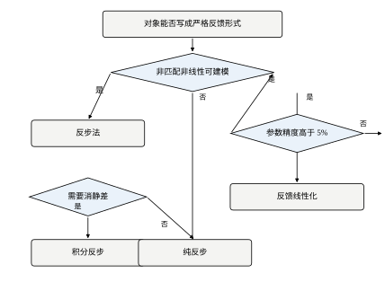
按图走一遍本章的例子：有执行器限幅但不常触碰（u_{\max}=10，需求峰值 7.00）→ 进入“模型是否可辨识”→ 可辨识 → 进入“是否需要零超调且要求快”→ 需要 → 选反步。整条路径只用三个判断，就能落到本章的选择上。
反过来看另外两条分支为什么落不到反步：
这张图的价值不在于“给出答案”，而在于“把隐含的前提显式化”。 很多工程争论（“反步好还是 PID 好”）之所以吵不出结果，就是因为双方假设的前提不同：一方假设模型准、执行器够，另一方假设模型糙、限幅紧。把前提画进图里，争论就变成了“我们在哪条分支上”的事实问题。
本章花了不少篇幅对比反步与反馈线性化，两者的差别值得单独收束成三条。
第一，结构不同。 反馈线性化是“一次性把整个系统线性化”，需要相对阶等于系统阶数、需要 Lie 导数；反步是“逐级构造”，每级只处理一个标量方程。前者优雅，后者笨拙但灵活——反步可以在任何一级插入限幅、滤波、积分，反馈线性化只能在最后加。
第二，失配敏感度不同。 表 60-13 的六组数据给出稳定结论：反步的静差普遍是反馈线性化的 0.56~0.73 倍。式 (60-25) 与式 (60-26) 解释了原因——分母分别是 1+k_1k_2=7 与 k_p=4。这个比值可以提前算出来，不必做实验。
第三，平滑度不同。 标称工况的控制总变差：反馈线性化 6.1，反步 10.2，PID 27.5。反馈线性化最平滑，因为它没有“逐级虚拟控制”带来的中间放大。如果执行器对 u 的平滑度极其敏感（比如液压阀），反馈线性化更合适。
一条实用的判断：如果对象能写成 \dot x=f(x)+g(x)u 且相对阶等于阶数，两者都可用；如果要处理饱和、要在中间级加约束、或者状态有特殊结构，用反步。 本章的对象两条都满足，所以两者的实测差异完全来自“分母不同”这一条。
第 59 章讲了滑模，本章讲反步。两者的目标相似（对付非线性），手段完全不同。
滑模靠“不连续”：把状态赶到一个面上，然后在面上滑动。它对匹配扰动完全免疫，代价是抖振。反步靠“连续抵消”：逐级把非线性项减掉，剩下线性二阶系统。它对匹配扰动不免疫（只能靠积分或自适应），但没有抖振。
三个具体差别：
工程上两者常常混用：用反步做主体结构，在最后一级加一个小的滑模项（或饱和函数）来兜住未建模动态。这就是 §60.9 里没展开的“反步 + 滑模”混合，它的稳定性证明在第 59 章的结构上可以直接嫁接。
这一节把本章实测数据能直接反驳的说法集中列出来。每条都给出反例，不再展开论证。
误解一：“反步就是反馈线性化的另一种写法。” 两者在标称工况下的确都得到二阶线性误差动态，所以波形相似。但表 60-13 的六组失配数据给出稳定差距：反步静差是反馈线性化的 0.56~0.73 倍，根源是分母 1+k_1k_2 与 k_p 不同。结构不同的方法，在模型不准时才分得开。
误解二：“反步一定比 PID 快。” 调节时间上是的（1.96 s 对 4.33 s），但 IAE 上不是：PID 0.6731，反步 0.6983，PID 反而低 3.6%。原因是 PID 的超调（3.80%）让它更早穿过参考附近，积分误差反而小。这个反例说明“快”与“误差积分小”不是同一件事，指标要分开看。
误解三：“加了滤波器一定更平滑。” 式 (60-44) 与表 60-5 已经给出反例：\tau=0.02 时尾段 TV 是 70.8，比不加滤波的 23.6 还差三倍。滤波器的降噪能力取决于 1/\tau 与解析放大系数的比较，不是“加了就有效”。
误解四：“反步不超调是因为参数调得好。” 表 60-11 与表 60-12 的十行里，超调全部在 0.42% 以下，而且 k_1、k_2 怎么变都不影响。式 (60-47) 说明了原因：\zeta 有下界 \sqrt{1-1/k_1^2}，k_1\ge2 时不低于 0.866。这是结构性质，不是调参成果。
误解五：“k_1 越大越好。” 表 60-11 里 k_1 从 2 到 8，t_s 只从 1.96 s 降到 1.42 s（28%），总变差从 10.2 涨到 17.4（71%），|u|_{\max} 从 7.00 顶到 10.00。性价比在第 3 档之后转负，而且 k_1=4 时乘积 12 已经越过式 (60-49) 的上限 9。
误解六：“反步不怕延迟。” 表 60-9 的结论只在“延迟固定”时成立：4 拍 40 ms 使 t_s 保持 1.96 s、IAE 从 0.6983 微降到 0.6892。抖动延迟是另一回事，它让等效阻尼随拍变化，表现是“时好时坏”，这种故障不能靠调增益解决，要查通信时序。
误解七：“反步需要精确模型。” 它需要的是“非线性项的形式已知”，不是“参数精确”。表 60-13 里 a、c 各偏 \pm30\%，闭环依然稳定、超调依然接近零，只是静差到了 0.05~0.30 m。形式错了（比如把 \tanh 写成 \arctan）才是致命的，参数差三成只是掉精度。
七条误解有一个共同点：都把“结构性质”当成了“调参结果”，或者反过来。 反步的超调与失配宽容来自结构，速度与平滑度来自参数，把这两类混在一起谈，就会得出“多调调就好”的错误结论。
用本章的数据给反步下一个判断：
一句话：反步不是“更好的 PID”，而是“用模型换性能”的一条路径。 模型准、算力紧、指标严，它几乎是最优解；模型糙或约束紧，它反而不如 PID 或 MPC 省心。表 60-17 那张总账里没有全胜者，正是这个道理的量化版本。
如果要把本章的方法搬到另一个对象上，按下面六步走，可以避免大部分返工：
这六步里，第 1、2 步是“能不能用”，第 3~6 步是“用得好不好”。大部分失败发生在第 2 步被跳过——相对阶不对却硬套反步，结果输出跟得很好、内部状态已经发散，而且从外部波形上完全看不出来。
本章从一个具体的二阶对象出发，把反步从推导做到实现：
如果只记一句话，记这句：反步的全部价值，在于它把“非线性抵消”和“二阶误差动态”这两件事同时做到了，而且代价只是两个可算的增益。 式 (60-46) 是这句话的数学形式，表 60-17 是它的实测账本，图 60-11 是它的使用说明。
本章的全部数字来自 ch060_sim.py，全部图形来自 ch060_figs.py。前者只负责算，后者只负责画，两者通过 simulate() 的返回值与 metrics() 的字典交接，不共享全局状态。
运行方式：
python code/ch060_sim.py # 打印全部实验的数字
python code/ch060_figs.py # 生成 figs/ch060/ 下的 11 张 SVG + PDF这样拆分的理由很实际：数字与图形必须同源。如果画图脚本里另写一遍仿真，正文引用的数字和图上的曲线就会各说各话，而且这种不一致极难发现。本章所有图都调用 ch060_sim 里的同一个 simulate()，所以图 60-3 的曲线与表 60-10 的数字必然一致。
对象写成 f_plant()，返回连续右端项，不含任何控制逻辑：
def f_plant(x, u, a=A_NL, b=B_DRAG, c=C_NL):
"""连续对象右端项。"""
x1, x2 = float(x[0]), float(x[1])
return np.array([x2 + a * np.sin(x1),
-b * x2 + c * np.tanh(x1) + u])三个参数 a、b、c 都作为显式入参，默认为标称值。这样“对象参数”与“控制器参数”可以分别传，表 60-13 的失配实验就是通过给 simulate() 传不同的 a、c 实现的——控制器里仍然用标称值，对象用真值，两者不一致才叫失配。
积分器用定步长 RK4，每个采样周期内细分 SUB=4 次：
def rk4(x, u, h, a=A_NL, b=B_DRAG, c=C_NL):
"""定步长 RK4，一步 h。"""
k1 = f_plant(x, u, a, b, c)
k2 = f_plant(x + 0.5 * h * k1, u, a, b, c)
k3 = f_plant(x + 0.5 * h * k2, u, a, b, c)
k4 = f_plant(x + h * k3, u, a, b, c)
return x + h / 6.0 * (k1 + 2 * k2 + 2 * k3 + k4)两个设计选择值得说明。第一，周期内 u 冻结。 RK4 的四个斜率都用同一个 u，这对应“零阶保持器”，是数字控制的真实情形；如果让 u 在周期内连续变化，等于假设了一个模拟控制器，噪声实验的结果会偏乐观。第二，细分 4 次。 T_s=0.01 时内部步长 2.5 ms，对本章的特征时间（\omega_n=2.646，对应 0.38 s）足够细。表 60-8 把 T_s 扫到 0.5 s 时，内部步长变成 125 ms，此时积分误差已经不可忽略——那一档的“崩溃”里，有一部分是控制器离散化造成的，也有一部分是积分器本身不准造成的，正文在引用时把它整体当作“采样过慢”的后果，这个口径要在使用时留意。
Backstepping.step() 是全章的核心，二十行里包含了本章所有公式：
def step(self, t, x, ref, ts=TS, r_dot=0.0):
x1, x2 = float(x[0]), float(x[1])
e1 = x1 - ref
if self.ki:
if (not self.zone) or abs(e1) < self.zone:
self.integ = float(np.clip(self.integ + e1 * ts, -2.0, 2.0))
alf = -self.k1 * e1 - self.ki * self.integ - self.a * np.sin(x1) + r_dot
if self.tau and self.tau > 0:
if self.alf is None:
self.alf = alf
self.alf += (alf - self.alf) * ts / self.tau
d_alf = (alf - self.alf) / self.tau
e2 = x2 - self.alf
else:
x1_dot = x2 + self.a * np.sin(x1)
d_alf = (-(self.k1 + self.a * np.cos(x1)) * x1_dot
- self.ki * e1)
e2 = x2 - alf
u = -self.k2 * e2 - e1 + self.b * x2 - self.c * np.tanh(x1) + d_alf
return float(u)对照正文的式 (60-53)、(60-16)、(60-14)，逐行对应关系是：
zone 为 0 时退化为“始终积分”，对应 §60.7.8；这六段里，第 13~18 行是最容易写错的。它同时包含“对 x_1 的偏导”与“对时间的全导”，写成代码时容易把 a\cos x_1 写成 -a\cos x_1，或者在积分项上漏掉求导。本章 §60.3.7 的手算校验就是为了抓这类错误：手算 t=1.0 s 时 u=-2.308，仿真 -2.320，差 0.012，说明符号与系数都对。
第一处：e_2 用 \alpha_1 还是 \alpha_{1f}。 代码里两个分支用的是不同的量——动态面分支用 self.alf（滤波后的值），解析分支用 alf（当拍计算值）。这不是笔误，是必须的：用了哪个虚拟控制量，就必须用哪一路的导数。混用会让 e_2 和 \dot\alpha_1 来自两个不同的时间点，闭环方程 (60-5) 立刻不成立。§60.10.5 把它列进九项自检的第 5 条，就是因为这个错误从波形上看不出来，只会表现为“性能比预期差一点”。
第二处：首次调用时 self.alf 为 None。 动态面分支的第一拍直接用 \alpha_1 初始化滤波器，使 \alpha_{1f}(0)=\alpha_1(0)、d\_alf=0。如果忘了这一步，滤波器从 0 状态起步，第一拍的 (\alpha_1-\alpha_{1f})/\tau 会是一个巨大的值，u 直接顶到限幅。这个错误的表现与“k_1k_2 超限”完全一样，很容易误诊成参数问题。
反馈线性化的实现只有五行，因为它把所有非线性项一次性塞进 u：
def step(self, t, x, ref, ts=TS, r_dot=0.0, r_ddot=0.0):
x1, x2 = float(x[0]), float(x[1])
e = x1 - ref
y_dot = x2 + self.a * np.sin(x1)
v = r_ddot - self.kp * e - self.kd * (y_dot - r_dot)
u = v + self.b * x2 - self.c * np.tanh(x1) \
- self.a * np.cos(x1) * (x2 + self.a * np.sin(x1))
return float(u)注意最后一行那一长串 a\cos x_1(x_2+a\sin x_1)——它就是 Lie 导数 L_gL_fh 的倒数乘以 L_f^2h 之后剩下的补偿项。它的形式比反步复杂，但没有中间变量，所以实现上反而更短。这也印证了 §60.11.6 的判断：反馈线性化“优雅但不灵活”，因为它只有一个 u，没有可以插手的地方。
PID 是基线，三个参数 kp=40, ki=4, kd=10 是扫描出来的最优组合：
def step(self, t, x, ref, ts=TS, r_dot=0.0):
y = float(x[0])
e = ref - y
if self.yprev is None:
self.yprev = y
dy = (y - self.yprev) / ts
self.yprev = y
self.dprev += (dy - self.dprev) * ts / self.tf
u_raw = self.kp * e + self.ki * self.integ - self.kd * self.dprev
u = float(np.clip(u_raw, -self.umax, self.umax))
if abs(u_raw) < self.umax:
self.integ += e * ts
return u这里有两处刻意的工程处理。微分作用于测量（-kd*dprev 而不是对误差求导），避免参考跳变时微分项打出冲激；未饱和才积分，这是最基本的抗饱和。给 PID 配了这两个“优待”，是为了让对比公平——如果 PID 用误差微分且不做抗饱和，本章的总账（表 60-17）会好看得多，但那是稻草人对比，没有意义。
simulate() 是唯一把三件事串起来的地方：
yk = x[0] + (rng.normal(0.0, noise) if noise else 0.0)
vk = x[1] + (rng.normal(0.0, noise_v) if noise_v else 0.0)
uk = ctrl.step(t[k], np.array([yk, vk]), r, ts=ts, r_dot=rd) ...
if sat is not None:
uk = float(np.clip(uk, -sat, sat))
u[k] = uk
if delay > 0:
buf.append(uk)
up = buf.pop(0)
else:
up = uk四行对应四个实验维度：
[yk, vk]，对象演化用的是真状态 x。这是传感器噪声的正确建模方式；如果直接给状态加噪声，噪声会通过积分器“洗掉”，结果偏乐观。buf 长度等于延迟拍数，每拍推入新值、弹出旧值。delay=4 就是 40 ms，对应表 60-9 的最右列。dist 参数是外部扰动入口，加在 up 上而不是 uk 上，这样它进的是对象而不是控制器。主循环里还有一行容易被忽略：ctrl.reset() 在循环前调用。每个控制器都有自己的内部状态（积分器、滤波器、上一拍测量），不复位就会让上一组实验的残留影响下一组——这是批量跑实验时最常见的“数据莫名其妙”来源。
metrics() 的第一行调用全书的 simlib.step_metrics，然后补上四个本章特有的量：
m["iae"] = float(np.trapezoid(np.abs(res["e"]), t))
m["tv_u"] = float(np.sum(np.abs(np.diff(u))))
m["tv_u_tail"] = float(np.sum(np.abs(np.diff(ut))))
m["rms_u_tail"] = float(np.sqrt(np.mean(ut ** 2)))
m["ripple_y"] = float(np.ptp(yt))
m["ripple_v"] = float(np.ptp(vt))
m["ss_err"] = abs(m["steady_state"] - ref)
m["umax"] = float(np.max(np.abs(u)))step_metrics 给出调节时间、超调、稳态值，这三个指标全书的章节都用同一口径，所以表 60-17 里反步与 PID 的数字可以直接比。如果各章自己定义调节时间（比如一个用 2% 带、一个用 5% 带），跨章对比就全部失效——这是统一口径的真正理由。
本章新增的四个量各有针对性：
iae 用梯形积分，比矩形积分更接近真实能量；它在噪声实验里会显著变大，因为噪声也被积进去了。tv_u 是控制量逐拍变化绝对值之和，衡量“执行器磨耗”。标称工况反步 10.2、反馈线性化 6.1、PID 27.5，三者差异极大，这个指标比超调更能区分方法的“粗暴程度”。tv_u_tail 只统计最后 1 s，专门用于噪声实验。全段 tv_u 会被起始的大幅动作淹没，看不出稳态的抖动，这就是表 60-5 为什么要单列尾段 TV。ss_err 用“稳态值减参考”的绝对值，而不是末点误差，避免单点噪声干扰。脚本末尾按“一个实验一个函数”组织，report() 统一打印。实验与正文表格的对应关系见表 60-29。
| 函数 | 内容 | 对应表/图 |
|---|---|---|
exp_baseline |
标称三方法 | 表 60-10，图 60-3 |
exp_k1 / exp_k2 |
增益扫描 | 表 60-11、60-12，图 60-4 |
exp_noise |
位置噪声下的解析求导 | 图 60-5 基准 |
exp_dsc |
动态面 \tau 扫描 | 表 60-5，图 60-6 |
exp_mismatch |
六组失配 + 积分反步 | 表 60-13，图 60-7 |
exp_sat |
限幅四档 | 表 60-14，图 60-8 |
exp_ts |
采样周期扫描 | 表 60-8 |
exp_track |
斜坡跟踪 | 表 60-16，图 60-9 |
exp_ic |
大初始偏差 | 表 60-15，图 60-10 |
exp_delay |
延迟扫描 | 表 60-9 |
复现时要注意两点。第一，噪声实验必须固定种子。 simulate() 的 seed 参数默认 0，每次运行噪声序列相同，所以表 60-5 的数字可以逐位复现；如果改了 seed，尾段 TV 会有 10% 量级的波动，那时比较 \tau 的优劣就要看趋势而不是绝对值。第二，扫描实验的步长要一致。 表 60-11 的 k_1 取 0.5、1、2、4、8，是等比数列；如果改用等差（0.5、1、1.5、2），曲线的形状会变，据此得出的“边际收益递减点”也会漂。
把脚本挪到别的对象上，改三个地方就够：
f_plant，写新的右端项。同时改 rk4 的调用处（它已经带参数透传，一般不用动）。-self.a*np.sin(x1) 与 +self.b*x2-self.c*np.tanh(x1) 对应对象的非线性项，换成新对象的形式。这一步必须与 f_plant 严格对应，符号错了闭环方程就不成立。d_alf 那一行是对 \alpha_1 求全导，新对象的 \dot x_1 表达式变了，这一行也必须跟着变。若不想推，直接把 dsc_tau 设成正数，走动态面分支，就绕过了这一步。改完之后，先用 §60.3.7 的手算办法核对一拍：给定 x_1、x_2、r，手算 e_1、\alpha_1、e_2、\dot\alpha_1、u，与 step() 的返回值对比。误差应在 10^{-3} 量级（差在浮点与求导的数值细节上），超过这个量级一定是符号或系数错了。这一步花十分钟，能省掉后面几小时的“波形不对但不知道哪错”。
整个脚本跑完（十组实验、约 120 次仿真、每次 1200 步）在普通笔记本上约十几秒。计算量的分布是：对象积分占大头（每步 4 次 RK4，每次 4 次右端项），控制器只占很小一部分——这本身就是反步“算力极低”的一个侧面证据：控制器每拍六次三角函数加十几次乘加，比积分器便宜得多。
三个数值细节值得记下：
np.trapezoid 是 NumPy 2.0 起的新名字，旧版本是 np.trapz；脚本按新名字写，若在旧环境运行需要改。np.ptp 求峰峰值，用于 ripple_y、ripple_v；它对单个元素会报错，所以 n_tail 至少要取 1（metrics() 里有 max(1, ...) 保护）。float() 强制成标量再进控制器，避免 NumPy 标量在后续运算中悄悄升维。这一条在移植到嵌入式时尤其重要，因为那里根本没有 NumPy。最后一句提醒：脚本能跑出与本章相同的数字，不等于你的控制器是对的。 数字只是“在这个模型下的结果”，模型的正确性由 §60.10.2 的标定保证，实现的正确性由 §60.3.7 的手算保证。三者缺一，数字都没有意义。